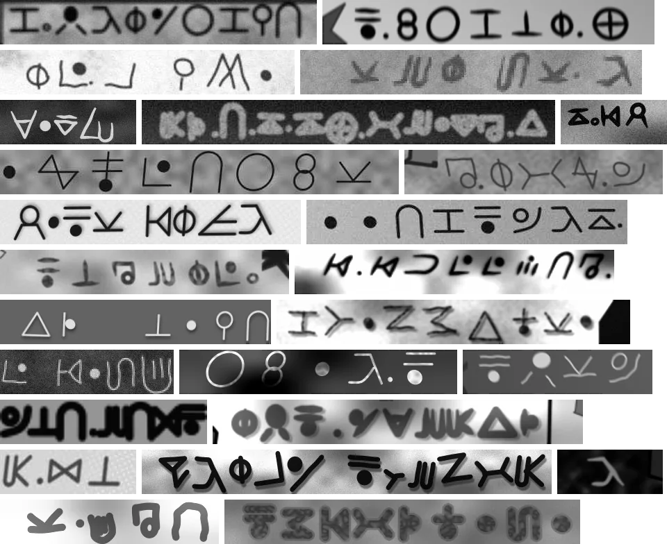
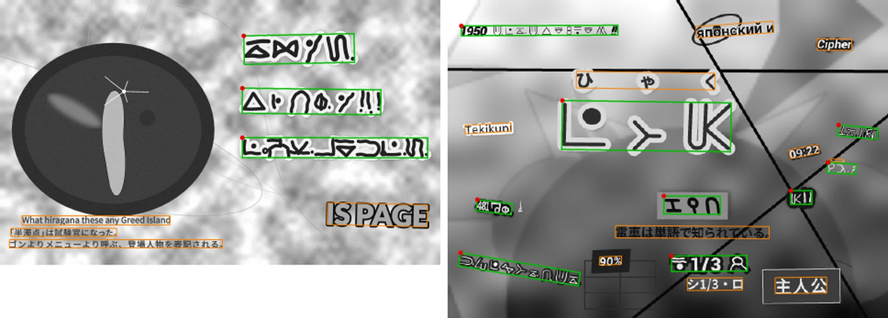
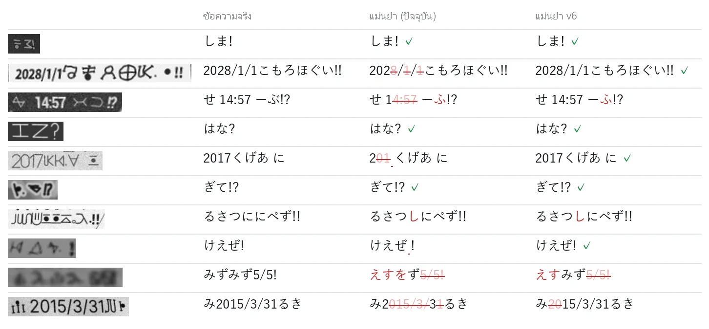
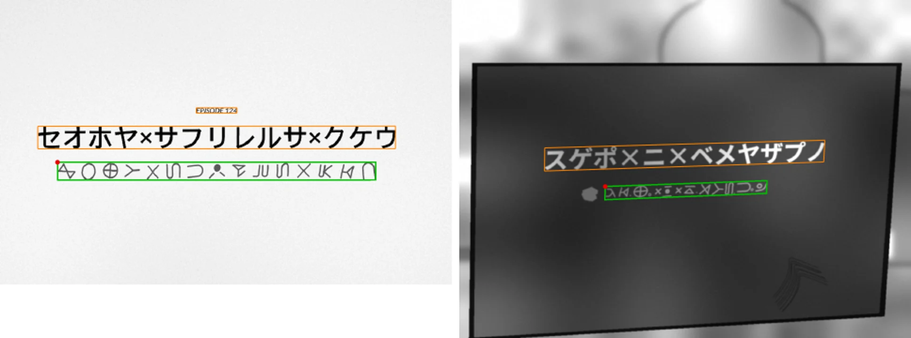
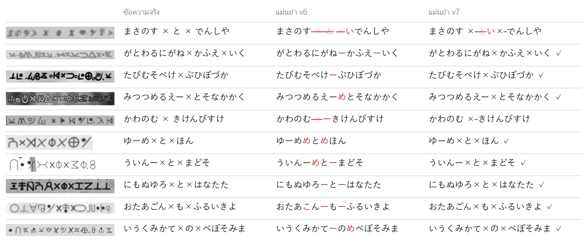

รายงานการวิจัย · เจาะลึก
อ่านอักษรที่แต่งขึ้นในเบราว์เซอร์: OCR แบบ int8 ขนาด 1 MB สำหรับอักษรฮันเตอร์ × ฮันเตอร์
บรรทัดและหน้าสังเคราะห์ ตัวอ่าน CTC บน MobileNetV4 กับตัวตรวจจับบรรทัด DBNet-lite การฝึกแบบรับรู้การควอนไทซ์ที่ทำตามกฎ int8 ของ Espressif และเอนจินภาษา Rust ใน WebAssembly ที่ให้ผลตรงกับกฎเหล่านั้นทุกบิต ตัวเลขทุกตัวด้านล่างมาจากบันทึกการวิจัยและล็อกการรันของโปรเจกต์
อัปเดต 25 พฤศจิกายน 2026 รายงานนี้บรรยายโมเดลรุ่นแรก คือตัวอ่าน v4 (75 คลาส) และ det_v2 ตอนนี้หน้าตัวอ่านใช้ตระกูลโมเดลที่ฝึกด้วยหน้าแบบภาพถ่ายด้วย ชุดเร็วคือ det_v2 กับตัวอ่านขนาดเล็กที่ฝึกใหม่ (91 คลาส: คานะ ช่องว่าง ตัวเลข และ ! ? : / . -) ส่วนชุดแม่นยำคือตัวตรวจจับ MobileNetV4-small 1.0 ที่ 960 px กับตัวอ่านที่ใหญ่กว่า รวม 3.6 MB การฝึกและผลทดสอบอยู่ใน docs/research/JOURNAL.md (2026-11-25)
อัปเดต 26 พฤศจิกายน 2026 หน้าตัวอ่านเปลี่ยนมาใช้ตัวอ่าน v7 แล้ว ซึ่งอ่านตัวเลขที่วาดเป็นส่วนหนึ่งของตัวอักษรได้ เช่น หมายเลขรุ่น 07 หรือ !! ท้ายชื่อเรื่อง (ภาคผนวก E) และอ่านกากบาท × ในชื่อตอนของอนิเมะได้ด้วย (ภาคผนวก F)
บทคัดย่อ
มังงะและอนิเมะ ฮันเตอร์ × ฮันเตอร์ เขียนป้าย จดหมาย และการ์ดชื่อตอนด้วยอักษรที่แต่งขึ้น ซึ่งเป็นรหัสแทนที่แบบหนึ่งต่อหนึ่งของคานะภาษาญี่ปุ่น รายงานฉบับนี้อธิบายระบบรู้จำอักขระด้วยแสง (OCR) สำหรับอักษรดังกล่าว ที่ทำงานในเว็บเบราว์เซอร์บนมือถือได้ทั้งหมด เนื่องจากไม่มีข้อมูลที่ติดป้ายกำกับอยู่เลย ทุกโมเดลจึงฝึกด้วยภาพที่สร้างขึ้น ได้แก่ ตัวสร้างบรรทัด ซึ่งพัฒนามาสี่เวอร์ชันโดยแต่ละเวอร์ชันแก้ความล้มเหลวที่วัดได้ และตัวสร้างหน้า ซึ่งวาดข้อความทั่วไปและไอคอนที่ไม่ติดป้ายกำกับไว้เป็นตัวอย่างลบด้วย ระบบมีโมเดล int8 สามตัว รวมกันประมาณ 1 MB ตัวตรวจจับบรรทัดแบบ DBNet (350k พารามิเตอร์, การคูณ-สะสม 1.57 G ครั้งต่อหน้า 640 × 640) ทำหน้าที่หาบรรทัด และตัวอ่าน CTC สองตัว (323k พารามิเตอร์, 154 M MACs ต่อบรรทัด 48 × 768) อ่านบรรทัดแนวนอนและคอลัมน์แนวตั้ง ทั้งสามโมเดลใช้แบ็กโบน MobileNetV4-small ร่วมกัน การฝึกแบบรับรู้การควอนไทซ์ที่จำลองกฎ int8 แบบกำลังของสองของ Espressif ช่วยปิดช่องว่างของ int8 ได้เกือบทั้งหมด เอนจินภาษา Rust แบบ no_std ที่คอมไพล์เป็น WebAssembly ให้ผลตรงกับการจำลองเลขจำนวนเต็มของ Espressif ทุกบิต และทำงานได้ราว 16 G MAC/s บนเดสก์ท็อปหนึ่งเธรด บนข้อมูลที่สร้างขึ้น ตัวอ่านมีอัตราความผิดพลาดระดับอักขระ 0.84% (แนวนอน) และ 0.71% (แนวตั้ง) ในแบบ int8 และตัวตรวจจับได้ F1 0.922 ในแบบ fp32 ไปป์ไลน์ int8 เต็มรูปแบบในเบราว์เซอร์ได้ F1 91.0% ที่ราว 0.2 s ต่อหน้า เรารายงานการทดลองเปรียบเทียบทุกชุด รวมถึงชุดที่ล้มเหลว และข้อจำกัดของการประเมินผลที่ไม่ได้ใช้ภาพจริงเลย
คำสำคัญ: การรู้จำข้อความในฉาก (scene text recognition) · CTC · DBNet · ข้อมูลสังเคราะห์ · การควอนไทซ์ int8 · QAT · WebAssembly · สเกลกำลังของสอง

1 บทนำ
ใน ฮันเตอร์ × ฮันเตอร์ ตัวหนังสือในโลกของเรื่องถูกวาดด้วยอักษรที่แต่งขึ้น แฟน ๆ ถอดได้ว่ามันคือรหัสแทนที่ (substitution cipher) ของคานะภาษาญี่ปุ่น (Hunterpedia; Omniglot) มีกลิฟ (glyph) คานะ 46 ตัว บวกเครื่องหมายเสียงยาว ー รวมเป็นกลิฟพื้นฐาน 47 ตัว คานะเสียงก้องทำงานเหมือนในภาษาญี่ปุ่น: จุดทึบเล็ก ๆ ที่มุมขวาล่างเปลี่ยน か เป็น が และวงกลมเล็ก ๆ เปลี่ยน は เป็น ぱ ฮิรางานะและคาตาคานะใช้กลิฟร่วมกัน ส่วนคานะตัวเล็ก (ゃ, っ) จะวาดให้เล็กลง การอ่านอักษรนี้จึงหมายถึงการอ่านคานะ (รูปที่) ส่วนการถอดเป็นโรมาจิหรือแปลความหมายต่อจากนั้นทำได้ง่าย
เป้าหมายคือตัวอ่านที่เล็กพอสำหรับเบราว์เซอร์ในโทรศัพท์: ใส่รูปถ่าย ภาพแคปหน้าจอ หรือเฟรมจากกล้องเข้าไป แล้วได้คานะและโรมาจิออกมาโดยไม่ต้องพึ่งเซิร์ฟเวอร์ เป้าหมายแรกเล็กกว่านั้นอีก คือไมโครคอนโทรลเลอร์ ESP32-S3 เป้าหมายนั้นถูกพักไว้กลางทาง แต่ข้อจำกัดของมันได้กำหนดรูปร่างของโมเดล ได้แก่ เลขคณิต int8 ที่ใช้สเกลกำลังของสองต่อเทนเซอร์ และใช้เพียงคอนโวลูชัน ReLU และการบวก
มีปัญหาสามข้อที่ทำให้งานนี้ยากกว่าที่เห็น ข้อแรก ไม่มีชุดข้อมูล: ตัวอย่างจริงมีเพียงหลักสิบ และเป็นภาพจากเรื่องที่มีลิขสิทธิ์ ข้อสอง เครื่องหมายเสียงก้องเล็กมาก จุดดาคุเต็นมีรัศมี 0.065 em ดังนั้นที่ความสูงบรรทัด 32 px มันกว้างเพียงหนึ่งถึงสองพิกเซล และการสับสนระหว่าง が กับ か ก็เป็นข้อผิดพลาดที่พบบ่อยที่สุดตลอดรายงานนี้ ข้อสาม อักษรนี้ปรากฏปนกับสิ่งอื่น ทั้งบอลลูนคำพูด ภาพตัวละคร ข้อความภาษาญี่ปุ่นและอังกฤษ และไอคอน ตัวตรวจจับที่ฝึกด้วยอักษรฮันเตอร์อย่างเดียวไม่มีเหตุผลอะไรที่จะมองข้ามตัวหนังสือทั่วไป
รูปที่ แสดงภาพรวมของระบบ ฝั่งออฟไลน์ ตัวสร้างข้อมูลสองตัวสร้างภาพฝึก PyTorch ฝึกโมเดล และสายงานควอนไทซ์แปลงโมเดลเป็นไฟล์ int8 ฝั่งออนไลน์ เอนจินภาษา Rust ที่คอมไพล์เป็น WebAssembly รันตัวตรวจจับหนึ่งตัวและตัวอ่านสองตัวในเบราว์เซอร์
ผลงานของรายงานนี้เน้นด้านการใช้งานจริงมากกว่าด้านอัลกอริทึม:
- ข้อมูลสังเคราะห์สำหรับอักษรที่แต่งขึ้น ตัวสร้างบรรทัดแบบเวกเตอร์ (สี่เวอร์ชัน แต่ละเวอร์ชันมีที่มาจากความล้มเหลวที่วัดได้) และตัวสร้างหน้าภาษา Rust ที่เขียนเป้าหมายของ DBNet และตั้งแต่เวอร์ชันที่สามก็ใส่ข้อความทั่วไปและไอคอนที่ไม่ติดป้ายกำกับไว้เป็นตัวอย่างลบที่ยาก (hard negatives) (หัวข้อ 3)
- โมเดล int8 ขนาดเล็กที่ใช้ชุดการดำเนินการจำกัด ตัวอ่าน CTC ที่มีแต่คอนโวลูชัน และตัวตรวจจับ DBNet-lite บน MobileNetV4-small ที่ฝึกล่วงหน้าด้วย ImageNet ใช้เพียง Conv, ReLU และ Add บวกกับ Resize แบบ nearest และ Concat สำหรับตัวตรวจจับ (หัวข้อ 4)
- การฝึกแบบรับรู้การควอนไทซ์ที่ตรงกับเป้าหมายทุกประการ การควอนไทซ์จำลอง (fake quantisation) ที่ทำซ้ำกฎกำลังของสองของ ESP-PPQ ตรวจสอบแล้วว่าเลขชี้กำลังตรงกันทุกตัวและ logit ตรงกันทุกค่า (หัวข้อ 6)
- เอนจิน int8 ที่ให้ผลตรงกันทุกบิต เอนจินภาษา Rust แบบ no_std ที่ไม่พึ่งไลบรารีภายนอกเลย มีเคอร์เนล WebAssembly SIMD ซึ่งให้เอาต์พุตเท่ากับการจำลองของ ESP-PPQ ในทุกเวกเตอร์ที่ทดสอบ (หัวข้อ 6)
- การประเมินผลทั้งไปป์ไลน์อย่างตรงไปตรงมา บนหน้าที่สร้างขึ้น ได้แก่ การกวาดค่าการประมวลผลภายหลังและการตัดภาพ ตัวกรองความมั่นใจ และการศึกษาผลบวกลวง (false positive) บนข้อความที่ไม่ใช่อักษรฮันเตอร์ (หัวข้อ 7)
2 งานที่เกี่ยวข้อง
การอ่านอักษรฮันเตอร์ เท่าที่เราตรวจสอบได้ นี่คือ OCR ตัวแรกสำหรับอักษรฮันเตอร์ × ฮันเตอร์ การค้นหาบนเว็บ GitHub และ Hugging Face เมื่อวันที่ 25 พฤศจิกายน 2026 พบเพียงเครื่องมือที่ทำงานในทิศทางตรงข้าม คือแปลงข้อความที่พิมพ์ให้เป็นอักษรฮันเตอร์ เช่น ตัวแปลงตามเสียงอ่านที่จัดข้อความด้วยฟอนต์ฮันเตอร์ มีรีโพซิทอรีบน Hugging Face อยู่ไม่กี่แห่งที่ตั้งชื่อตามเรื่องนี้ แต่เป็นเพียงที่จองชื่อที่ว่างเปล่า หรือเป็นตัวจำแนกภาพที่ไม่เกี่ยวข้อง ไม่มีเครื่องมือใดเลยที่อ่านอักษรนี้จากภาพ
การรู้จำบรรทัดด้วย CTC Connectionist temporal classification [1] ฝึกเครือข่ายที่ปล่อยคลาสออกมาหนึ่งคลาสต่อหนึ่งช่วงเวลา (time step) ซึ่งรวมถึงคลาส "blank" (ว่าง) โดยเทียบกับป้ายกำกับที่ไม่ได้ระบุตำแหน่งของตัวอักษร CRNN [2] รวมตัวสกัดฟีเจอร์แบบคอนโวลูชัน ชั้นแบบเวียนกลับ (recurrent) และชั้นถอดความแบบ CTC เข้าเป็นโมเดลเดียวที่ฝึกได้ทั้งหมดสำหรับข้อความในฉาก ตัวอ่านของเราคงโครงสร้างและ loss แบบ CTC ของ CRNN ไว้ แต่เปลี่ยนชั้นแบบเวียนกลับเป็นคอนโวลูชันแบบ depthwise เครือข่ายที่มีแต่คอนโวลูชันทำให้เอนจิน int8 มีการดำเนินการเพียงราวหกชนิด ซึ่งทั้งหมดควอนไทซ์ด้วยกฎชุดเดียวกัน
การตรวจจับข้อความด้วยการแบ่งส่วนภาพ (segmentation) DBNet [3] ทำนายแผนที่ความน่าจะเป็นของบริเวณข้อความที่หดเข้า และแผนที่ค่าเกณฑ์ (threshold map) แล้วทำให้การแปลงเป็นค่าไบนารีหาอนุพันธ์ได้ด้วยซิกมอยด์ที่ชันมากของผลต่างระหว่างสองแผนที่นี้ ตอนอนุมานใช้เพียงแผนที่ความน่าจะเป็น และกู้กรอบกลับมาด้วยการขยาย ("unclip") ส่วนประกอบที่เชื่อมต่อกัน (connected components) ของแผนที่นั้น เราใช้เป้าหมายและ loss ของ DBNet แทบไม่เปลี่ยนแปลง การขุดหาตัวอย่างลบที่ยากของมันทำตาม OHEM [7] PP-OCR [8] แสดงให้เห็นว่าตัวตรวจจับ DB ขนาดเล็กคู่กับตัวรู้จำ CTC ขนาดเล็กประกอบเป็นระบบ OCR น้ำหนักเบาที่ใช้งานได้จริง การแยกเป็นตัวตรวจจับกับตัวอ่านบรรทัดของเราก็ใช้แนวทางเดียวกัน แต่เล็กกว่ามาก เพราะอักษรนี้มีเพียง 74 โทเค็น
แบ็กโบน MobileNetV4 [4] นำเสนอ Universal Inverted Bottleneck (UIB) และตระกูลโมเดลสำหรับอุปกรณ์พกพา รุ่นย่อย "conv-small" ใช้เพียงคอนโวลูชันธรรมดาและแบบ depthwise กับ ReLU โดยไม่มี squeeze-excitation หรือ hard-swish ซึ่งเหมาะกับฮาร์ดแวร์แบบจุดตรึง (fixed-point) เราใช้รุ่นความกว้าง 0.5 ที่ฝึกล่วงหน้าด้วย ImageNet
ข้อมูลฝึกสังเคราะห์ Jaderberg และคณะ [9] ฝึกตัวรู้จำคำด้วยภาพที่เรนเดอร์ขึ้นทั้งหมด และ SynthText [10] เรนเดอร์ข้อความลงในภาพธรรมชาติเพื่อฝึกการระบุตำแหน่ง ทั้งสองงานมีฟอนต์จริงให้เรนเดอร์ แต่ในงานนี้ ตัว "ฟอนต์" เองต้องลอกลายขึ้นมา และไม่มีชุดทดสอบมาตรฐาน (benchmark) จริงให้ใช้ปรับเทียบ
การอนุมานด้วยเลขจำนวนเต็ม Jacob และคณะ [5] นิยามการอนุมานด้วยเลขจำนวนเต็มล้วน พร้อมการฝึกด้วยการควอนไทซ์จำลอง (QAT) TQT [6] ฝึกค่าเกณฑ์ของการควอนไทซ์ในโดเมนลอการิทึมและบังคับให้สเกลเป็นกำลังของสอง เพื่อให้การปรับสเกลเหลือเพียงการเลื่อนบิต รันไทม์ ESP-DL และตัวควอนไทซ์ ESP-PPQ ของ Espressif [11] ใช้ int8 แบบสมมาตรที่มีสเกลกำลังของสองต่อเทนเซอร์สำหรับเป้าหมาย ESP32-S3 เราใช้แผนนี้เป็นข้อตกลงระหว่างการฝึกกับเอนจิน
3 ข้อมูลสังเคราะห์
3.1 กลิฟ
กลิฟพื้นฐานทั้ง 47 ตัวถูกลอกลายด้วยมือจากตารางในวิกิของแฟน ๆ ออกมาเป็นองค์ประกอบพื้นฐานของเส้น ได้แก่ เส้นตรง ส่วนโค้ง วงรี จุด และเส้นโค้งสไปลน์ โดยอ่านค่าจากภาพตัดที่ขยาย 4–5 เท่า แล้วเรนเดอร์กลับมาวางเทียบกันเคียงข้าง ตารางของ Omniglot ตรงกันทุกกลิฟ ยกเว้น も ซึ่งในตารางนั้นจบด้วยวงกลมแทนที่จะเป็นจุด แหล่งข้อมูลทางการสองแหล่งที่พบภายหลังช่วยตัดสินรูปแบบที่เหลือ ตารางตัวอักษรของอนิเมะปี 2011 ตรงกับที่ลอกลายไว้ 43 จาก 46 กลิฟ ตารางนั้นแสดง ま แบบกลับด้าน (ชี้ไปทางซ้าย) せ แบบแคบคล้ายเลข "4" และ も ที่จบด้วยวงกลม ตารางในหนังสือไกด์บุ๊กฉบับพิมพ์ก็มี ま ที่ชี้ซ้ายเช่นกัน แต่ใช้ せ แบบกว้างและ も แบบจุด ดังนั้น ま ในตารางของแฟน ๆ น่าจะผิด ขณะที่ せ และ も มีรูปแบบทางการสองแบบจริง ๆ
ตัวสร้างข้อมูลจึงสุ่มเลือกรูปแบบตามน้ำหนัก (รูปที่): ま ชี้ซ้าย 85% ของเวลา ส่วน せ และ も ใช้แต่ละรูปแบบครึ่งต่อครึ่ง เครื่องหมายเสียงก้องถูกวางโดยอิงกับกรอบล้อมรอบ (bounding box) ของรูปแบบที่วาดจริง ตัวสร้างบรรทัดเวอร์ชัน 4 ยังขยับตำแหน่งเครื่องหมายด้วย: ในแนวนอนเป็น 0.55–1.35 เท่าของระยะในตาราง แต่ไม่ให้ใกล้กว่าครึ่งความกว้างเส้นบวกรัศมีเครื่องหมายบวก 0.03 em และในแนวตั้งขยับขึ้นหรือลงตาม U(−0.06, 0.03) em
ป้ายกำกับใช้คานะ 73 ตัวบวกช่องว่าง รวมทั้งหมด 74 โทเค็น คาตาคานะและคานะตัวเล็กถูกรวมเข้าเป็นฮิรางานะขนาดปกติ เพราะกลิฟแยกพวกมันออกจากกันได้ไม่แน่นอน ขนาดสัมพัทธ์ของกลิฟคงไว้ตามตาราง: い เป็นจุดเดี่ยว และ て เตี้ย หากปรับทุกกลิฟให้เต็มกรอบ em จะทำให้ い กลายเป็นจานกลมขนาดใหญ่ และทำให้ความแตกต่างระหว่าง い กับดาคุเต็นพร่าเลือนไป
3.2 ตัวสร้างบรรทัด
ตัวสร้างบรรทัด (Python, hxh_ocr/synth.py) วาดกลิฟจากเส้นแบบเวกเตอร์ จึงเปลี่ยนสไตล์ได้ง่าย มีสามสไตล์ ได้แก่ clean (คล้ายฟอนต์) hand (เส้นสั่น เส้นเหลื่อม หมุนเล็กน้อย และสุ่มสเกลกับสัดส่วน) และ brush (ปั๊มลายพู่กันที่เรียวตามแรงกด) ความกว้างเส้นอยู่ระหว่าง 0.04 ถึง 0.24 em บรรทัดเป็นแนวนอน หรือเป็นแนวตั้งใน 30% ของตัวอย่าง ระยะห่างตัวอักษรเป็นแบบความกว้างคงที่หรือแบบตามสัดส่วน มีการเอียงแบบตัวเอนและเส้นฐานโค้งเป็นครั้งคราว พื้นหลังมีทั้งสีเรียบ ไล่เฉด สัญญาณรบกวนแบบ value noise กระดาษ สกรีนโทนแบบมังงะ ลายเส้นแรเงา และรูปทรงสุ่ม เอฟเฟกต์หมึกมีทั้งเส้นขอบ เงาตกกระทบ หมึกด่าง และหมึกไล่เฉด ส่วนการทำให้ภาพเสื่อมมีทั้งเบลอ เบลอจากการเคลื่อนไหว ย่อแล้วขยาย แสงไม่สม่ำเสมอ คอนทราสต์และแกมมา สัญญาณรบกวน การแปลงเป็นไบนารี และ JPEG ตัวอย่างแต่ละตัวเป็นภาพตัดหนา 64 px การฝึกจึงเลือกใช้ 32, 40 หรือ 48 px ได้ด้วยการย่อ ตัวอย่างทุกตัวกำหนด seed จาก (seed, split, index) จึงสร้างชุดใดก็ได้ขึ้นใหม่ได้ตรงทุกประการ
ตัวสร้างข้อมูลผ่านมาสี่เวอร์ชัน (ตารางที่, รูปที่) การเปลี่ยนแปลงแต่ละครั้งตอบสนองต่อความล้มเหลวที่เห็นในคำทำนายที่แย่ที่สุดของโมเดล หรือในภาพจริง
| เวอร์ชัน | สิ่งที่เปลี่ยน | เหตุผล | ฝึก + ตรวจสอบ |
|---|---|---|---|
| v1 | กลิฟที่ลอกลาย สามสไตล์ พื้นหลัง เอฟเฟกต์ และการทำให้เสื่อม คานะตัวเล็กที่สเกล 0.55–0.78 ในราว 65% ของบรรทัด มีช่องว่างระหว่างคำ | เวอร์ชันแรก ตารางของ Omniglot ช่วยเพิ่มขนาดคานะตัวเล็กและช่องว่าง | 100k + 5k |
| v2 | ภาพระดับเทา JPEG q90 สิ่งรบกวนมากขึ้น | ข้อมูลมากขึ้น ตารางตัวอย่างที่แย่ที่สุด 32 ตัว (worst-32) จึงเผยให้เห็นสัญญาณรบกวนในป้ายกำกับ: การแปลงเป็นไบนารีแบบ Otsu (5% ของตัวอย่าง) ทำให้ตัวหนังสือกลายเป็นก้อน และบรรทัดข้างเคียงอาจโผล่มามากพอ ๆ กับบรรทัดที่ติดป้ายกำกับ | 500k + 10k |
| v3 | ตัดภาพแน่นขึ้น (em เป็น U(0.58, 0.84) ของความสูงบรรทัดใน 65% ของบรรทัด และ U(0.40, 0.62) ในที่เหลือ) บรรทัดข้างเคียงโผล่ได้ไม่เกิน 35% ของความสูงและห่างอย่างน้อย 0.12 em แปลงเป็นไบนารีเฉพาะบนพื้นหลังสีเรียบ โดยใช้จุดกึ่งกลางระหว่างหมึกกับพื้นหลัง | กำจัดสัญญาณรบกวนในป้ายกำกับของ v2 และให้เครื่องหมายได้พิกเซลเพิ่มขึ้นอีกเล็กน้อย | บรรทัดฝึกแนวนอน 349,558 บรรทัด |
| v4 | รูปแบบกลิฟทางการ "ภาพตัวละคร" ข้างปลายบรรทัดใน 25% ของบรรทัด สไตล์ตัวหนาใน 18% ของบรรทัด (เดิม 10%) หนาได้ถึง 0.30 em (เดิม 0.24) เงาตกกระทบใน 18% (เดิม 10%) โดย 60% เป็นเงานุ่ม และสุ่มขยับเครื่องหมาย | ความล้มเหลวบนการ์ดชื่อตอนของอนิเมะ: ま กลับด้าน せ แบบแคบ ภาพที่ขอบภาพตัดถูกอ่านเป็นกลิฟ และเส้นที่หนักกว่า | 500k + 10k |
v1 และ v2 ถูกใช้ร่วมกันในรอบที่ 1 (บรรทัดฝึกแนวนอน 419,381 บรรทัด) แถว v3 ให้จำนวนบรรทัดฝึกแนวนอนจากไฟล์ตั้งค่าการรัน บันทึกการวิจัยไม่ได้ระบุขนาดรวมของชุด v3


ความเร็วสำคัญกว่าที่คาดไว้ การรันเต็มครั้งแรกผลิตได้ราว 180 ตัวอย่างต่อวินาทีบนโปรเซสเวิร์กเกอร์ 14 ตัว การโปรไฟล์ด้วย cProfile พบว่าคอขวดคือลูปใน Python (การปั๊มลายพู่กัน วงกลมเชื่อมรอยต่อ และการเพิ่มจุดแบบวนลูป) ไม่ใช่การประมวลผลภาพ หลังจากเปลี่ยนส่วนเหล่านั้นเป็นแบบเวกเตอร์และตรึง BLAS ไว้ที่หนึ่งเธรดต่อเวิร์กเกอร์ ปริมาณงานขึ้นไปถึง 572 ตัวอย่าง/วินาที ทำให้ 100k บรรทัดใช้เวลาราวสามนาที เวอร์ชัน 4 เรนเดอร์ได้ราว 78 บรรทัดต่อวินาทีต่อคอร์
3.3 ตัวสร้างหน้า
ตัวตรวจจับต้องการหน้าทั้งหน้าที่ทุกบรรทัดติดป้ายกำกับไว้ ตัวสร้างตัวที่สองซึ่งเขียนด้วยภาษา Rust (rust/hxh-synth) ประกอบหน้าสไตล์มังงะขนาด 512–1024 px ด้านยาว มันเริ่มต้นใน Python แล้วย้ายมาเป็น Rust ตามการตัดสินใจของเจ้าของโปรเจกต์ เวอร์ชัน Rust ผลิตได้ 92 หน้าต่อวินาทีบนหกเธรด เทียบกับ 16.5 หน้าของเวอร์ชัน Python (เร็วกว่าราว 3.5 เท่าต่อคอร์) เส้นของกลิฟ รูปแบบย่อย น้ำหนัก และรายการคำ ถูกส่งออกจากแพ็กเกจ Python เป็นไฟล์ JSON ไฟล์เดียว (73 กลิฟ, 77 รูปแบบ, 264 คำ) ซึ่งฝังอยู่ในไบนารี ข้อมูลจึงมีแหล่งความจริงเพียงแหล่งเดียว
หน้าใช้เลย์เอาต์สามแบบ ได้แก่ ช่องภาพมังงะ (60%) ภาพนิ่งหรือโปสเตอร์อนิเมะ (25%) และเอกสารที่มีย่อหน้าและตารางมีเส้น (15%) กลุ่มข้อความได้แก่ บอลลูนคำพูด (วงรี ก้อนเมฆ ทรงระเบิด พร้อมหาง) คำบรรยาย ป้าย การ์ดที่มีเงานุ่ม บล็อกย่อหน้า ชื่อเรื่องที่มีเส้นขอบและคำเลียนเสียง ตัวเติมเล็ก ๆ และช่องตาราง กลุ่มข้อความถูกหมุนได้ถึง ±12° บางครั้งถูกบิดแบบเปอร์สเปกทีฟ และราว 11% ของบรรทัดเป็นแนวตั้ง ภาพหลอกตาถูกวาดทั้งก่อนและหลังข้อความ และราว 3% ของหน้าไม่มีข้อความเลย รูปสี่เหลี่ยม (quad) ของแต่ละบรรทัดคำนวณจากเรขาคณิตของเส้น จึงแนบพอดีกับหมึก และบรรทัดไม่ทับซ้อนกันเลย (รูปที่)

ชุดฝึกหลัก pages_v2 มีหน้าฝึก 30,000 หน้าและหน้าตรวจสอบ 1,000 หน้า เขียนเสร็จใน 3 นาทีที่ 168 หน้าต่อวินาทีบน 10 เธรด (3.2 GB) มีบรรทัดทั้งหมด 500,141 บรรทัด เฉลี่ย 16.7 บรรทัดต่อหน้า (มากสุด 56) ความสูงบรรทัดมัธยฐาน 19 px (เปอร์เซ็นไทล์ที่ 1 คือ 9 px และที่ 99 คือ 70 px) และมี 905 หน้าที่มีแต่ภาพ
3.4 ข้อความทั่วไปและไอคอนในฐานะตัวอย่างลบ
ตัวตรวจจับตัวแรก (det_v1 ฝึกด้วย pages_v2) ถูกนำไปลองกับภาพแคปหน้าจอของหน้าเว็บ Omniglot ที่อธิบายอักษรนี้ มันตีกรอบตัวหนังสือทุกบรรทัดบนหน้า ทั้งหัวข้อ ภาษาญี่ปุ่นที่มีคันจิ โรมาจิ ร้อยแก้วภาษาอังกฤษ URL และแถวของไอคอน จากนั้นตัวอ่านก็แปลงตัวหนังสือเหล่านั้นเป็นคานะที่ดูมั่นใจ ตัวตรวจจับเคยเห็นแต่อักษรฮันเตอร์กับภาพวาด อะไรที่ดูคล้ายตัวหนังสือจึงถือเป็นตัวหนังสือทั้งหมด
ชุดหน้าชุดที่สาม pages_v3 เพิ่มตัวหนังสือทั่วไปในฟอนต์จริงและไอคอน โดยไม่ติดป้ายกำกับเลย เป้าหมายของ DBNet ถือว่าพิกเซลที่ไม่ติดป้ายกำกับเป็นพื้นหลัง ตัวตรวจจับจึงต้องเรียนรู้ที่จะตอบสนองเฉพาะกับอักษรฮันเตอร์ (รูปที่) ฟอนต์ถูกอ่านตอนรันจากโฟลเดอร์ฟอนต์ของระบบ โดยไม่มีการคัดลอกหรือฝังไว้ บนเครื่องที่ใช้สร้าง ตัวสร้างพบฟอนต์ 80 แบบ ได้แก่ ฟอนต์ละตินแบบ sans, serif, mono, display และลายมือ ฟอนต์โกธิกภาษาญี่ปุ่น ภาษาเกาหลี และฟอนต์ไอคอน (Segoe MDL2 Assets ที่มี 1,525 กลิฟ, Segoe Fluent Icons ที่มี 1,624 กลิฟ, โครงร่างอีโมจิ, Webdings, Wingdings และอื่น ๆ) ข้อความมีหลายประเภท ได้แก่ ประโยคและหัวข้อที่ดูเหมือนภาษาอังกฤษ โรมาจิ URL วันที่ ราคาและตัวเลขอื่น ๆ ประโยคภาษาญี่ปุ่นที่มีคันจิ (รวมถึงแบบคอลัมน์แนวตั้ง) คานะ และภาษาเกาหลี กรีก และซีริลลิกเล็กน้อย (อย่างละราว 3%) สัญลักษณ์ Unicode เช่น ∀, ∇ วงกลม และจุด ถูกใส่ไว้โดยเจตนาเป็นตัวอย่างลบที่ยาก เพราะกลิฟฮันเตอร์หลายตัวหน้าตาคล้ายพวกมัน
ข้อความอื่น (foreign text) เข้ามาได้สามทาง ทั้งกลุ่มข้อความถูกเขียนเป็นข้อความอื่นด้วยความน่าจะเป็น 0.15 (1.6 เท่าของค่านี้บนหน้ามังงะ) กลุ่มผสมมีบรรทัดทั้งสองแบบด้วยความน่าจะเป็น 0.08 และองค์ประกอบเสริมจะเติมพื้นที่ที่เหลือ ได้แก่ ป้ายชื่อ เลขหน้า เครดิต คำบรรยายใต้ภาพ ไอคอนเดี่ยว และไอคอนที่เรียงเป็นแถวหรือเป็นตาราง เลย์เอาต์แบบที่สี่ ซึ่งใช้ใน 15% ของหน้า เลียนแบบภาพแคปหน้าจอของเว็บเพจ เอกสาร หรือแอป (หนึ่งในสี่ของกลุ่มนี้เป็นหน้าตาแอป) มีแถบนำทาง หัวข้อ ย่อหน้าขนาด 6–19 px รายการ ตาราง แถบด้านข้าง และส่วนท้าย บางครั้งมีบล็อกตัวอย่างอักษรฮันเตอร์หรือตารางตัวอักษรแบบเดียวกับของ Omniglot ราว 3% ของหน้าเป็นตัวอย่างลบที่ไม่มีอักษรฮันเตอร์เลย


มีกฎหนึ่งข้อที่ทำให้ป้ายกำกับสะอาด ช่วงข้อความอื่นต้องอยู่ห่างจากรูปสี่เหลี่ยมที่ติดป้ายกำกับทุกอันอย่างน้อย 0.3 เท่าของความสูงบรรทัดที่มากกว่าในสองบรรทัดนั้น บวกกับเส้นขอบหรือรัศมีเงาของมัน (รูปที่) การตรวจใช้ระยะห่างระหว่างรูปหลายเหลี่ยมนูนแบบแม่นตรงบนรูปสี่เหลี่ยมสุดท้าย ทั้งตอนวางกลุ่มข้อความและตอนวาดแต่ละบรรทัด มีการทดสอบที่ตรวจกฎนี้บน 320 หน้าที่สร้างด้วยการผสมมากกว่าค่าตั้งต้น
ชุดฝึก pages_v3 มีหน้าฝึก 30,000 หน้าและหน้าตรวจสอบ 1,000 หน้า (seed 3) ชุดตรวจสอบแยกต่างหาก pages_foreign (300 หน้า, seed 4) ถูกสร้างให้ยาก: เลย์เอาต์เว็บ 55% หน้าลบ 35% กลุ่มข้อความอื่นด้วยความน่าจะเป็น 0.5 กลุ่มผสม 0.15 องค์ประกอบเสริมที่เป็นข้อความอื่น 1.5 เท่า และไอคอน 3 เท่า ชุดนี้ใช้สำหรับการประเมินผลเท่านั้น (หัวข้อ 7.8)
4 โมเดล
4.1 ตัวอ่านบรรทัด
ตัวอ่านเป็นโมเดล CTC แบบ CRNN ที่ไม่มีส่วนเวียนกลับ (รูปที่) แบ็กโบนคือ mobilenetv4_conv_small_050 ของ timm ที่ฝึกล่วงหน้าด้วย ImageNet ตัดหลังสเตจที่สี่ โดยทิ้งส่วนหัว 480 และ 1,280 แชนเนลรวมทั้งตัวจำแนกไป เคอร์เนล RGB ของคอนโวลูชันแรกถูกรวมเป็นแชนเนลเทาเดียว สองสเตจแรกคง stride 2 ทั้งสองทิศทาง ความกว้างจึงลดลงสี่เท่า stride ทุกตัวหลังจากนั้นตั้งเป็น (2, 1): ลดความสูงลงครึ่งหนึ่งแต่คงความกว้างไว้ การเปลี่ยน stride ไม่เปลี่ยนรูปร่างของน้ำหนัก น้ำหนักที่ฝึกล่วงหน้าจึงโหลดได้โดยไม่ต้องแก้ไข บรรทัดขนาด 48 × 768 จะกลายเป็น 192 คอลัมน์ คอลัมน์ละ 64 ฟีเจอร์ สูงสองแถว การเฉลี่ยตามความสูงทำให้เหลือหนึ่งแถว ส่วนหัวลำดับ (sequence head) ประกอบด้วยบล็อก residual สองบล็อก แต่ละบล็อกเป็นคอนโวลูชัน depthwise ขนาด (1, 5) และคอนโวลูชัน 1 × 1 พร้อม ReLU ตามด้วย dropout 0.1 และตัวจำแนก 1 × 1 ให้คะแนน 75 ค่าต่อคอลัมน์: 74 โทเค็นและ blank ของ CTC
ชุดการดำเนินการถูกจำกัดให้แคบโดยเจตนา หลังจากรวม BatchNorm เข้าไปแล้ว กราฟ ONNX ของโมเดล 32 px มี Conv 49 ตัว Relu 32 ตัว Add 12 ตัว และ ReduceMean หนึ่งตัว ไม่มีอย่างอื่นเลย เอนจินรัน ReduceMean เป็น average pool ไม่มี LSTM, attention, squeeze-excitation หรือ hard-swish ตารางที่ แสดงรุ่นย่อยที่ฝึก โมเดล "three-stage" หยุดหลังสเตจที่สาม (96k พารามิเตอร์) ส่วนโมเดล "tiny" เป็นตัวควบคุมที่ฝึกจากศูนย์ ใช้บล็อก depthwise-separable ธรรมดาที่ปรับความกว้างให้มีพารามิเตอร์และ MACs เท่ากับ MobileNet
| โมเดล | พารามิเตอร์ | 32 × 256 | 48 × 384 | อินพุตที่ใช้งานจริง |
|---|---|---|---|---|
| mnv4s, 4 สเตจ, ImageNet | 323.0k317.5k เมื่อรวม BN | 30.2M | 77.0M | 154M ที่ 48 × 76860.5M ที่ 32 × 512 |
| mnv4s3, 3 สเตจ | 96.1k | 15.3M | 33.9M | 30.5M ที่ 32 × 512 |
| tiny, ฝึกจากศูนย์ | 327.8k324.1k เมื่อรวม BN | 30.1M | 70.4M | ไม่ได้ใช้งานจริง |
บรรทัดอินพุตเป็นภาพระดับเทา ปรับสเกลให้เท่าความสูงของโมเดลโดยคงสัดส่วนไว้ จำกัดความกว้างไม่เกิน 16 เท่าของความสูง และ normalise ให้อยู่ในช่วง [−1, 1] แบตช์ฝึกถูกเติมขอบให้เป็นพหุคูณของ 8 พิกเซล และความยาวอินพุตของ CTC ใช้ความกว้างจริงของแต่ละบรรทัด ⌈w/4⌉ ไม่ใช่ความกว้างที่เติมขอบแล้ว การเสริมข้อมูลแบบออนไลน์มีเพียงเล็กน้อย: สเกลแนวนอน 0.85–1.15 เติมขอบแบบสุ่ม บรรทัดกลับสี 10% และสัญญาณรบกวนเล็กน้อย โมเดลที่ใช้งานจริงมีอินพุตคงที่ 48 × 768: บรรทัดถูกย่อแบบเฉลี่ยพื้นที่ให้สูง 48 px เติมขอบด้านขวาด้วยการทำซ้ำคอลัมน์สุดท้าย และจะถูกบีบก็ต่อเมื่อกว้างกว่า 768 px เท่านั้น
การถอดรหัสเป็นแบบละโมบ (greedy) (รูปที่) เมื่อมีคะแนนต่อคอลัมน์ ตัวอ่านจะเลือกคลาสที่ดีที่สุดในทุกคอลัมน์ รวมตัวซ้ำ และตัด blank ทิ้ง:
โดยที่ ลบตัวซ้ำที่อยู่ติดกันออกก่อน แล้วจึงลบ blank ออก blank ที่อยู่ระหว่างคานะสองตัวที่เหมือนกันจะแยกพวกมันออกจากกัน จึงยังเขียน んん ได้ ถ้าคะแนนเสมอกันจะเลือกคลาสที่มี id ต่ำที่สุด เหมือนกับ numpy.argmax สำหรับการแสดงผลและการกรอง อักขระแต่ละตัวที่ถูกปล่อยออกมาจะได้ค่าความน่าจะเป็น softmax สูงสุดของคลาสนั้นตลอดช่วงคอลัมน์ ที่ปล่อยมันออกมา และความมั่นใจของบรรทัด คือค่าเฉลี่ยของอักขระทั้ง ตัว:
4.2 ตัวอ่านแนวตั้ง
บอลลูนในมังงะมักเขียนจากบนลงล่าง ตัวอ่านรับคอลัมน์ตามสภาพเดิมไม่ได้ ภาพตัดแนวตั้งจึงถูกหมุน 90° ทวนเข็มนาฬิกา: กลิฟแรกไปอยู่ทางซ้าย และทุกกลิฟนอนตะแคง กลิฟที่ถูกหมุนจะชนกับกลิฟที่ตั้งตรง ふ (รูป ⊃) เมื่อหมุนหนึ่งในสี่รอบจะดูเหมือน う (∩) โมเดลที่ใช้ร่วมกันจึงต้องได้รับการบอกทิศทาง (รูปที่) คอลัมน์แนวตั้งจึงถูกส่งไปยังตัวอ่านตัวที่สองที่ออกแบบเหมือนกัน แต่ฝึกด้วยคอลัมน์ที่หมุนแล้วเท่านั้น ได้แก่ คอลัมน์ฝึกแนวตั้ง 150,576 คอลัมน์ของ synth_v4 ซึ่งมีการกระจายความยาวเหมือนบรรทัดแนวนอน ทิศทางถูกเก็บไว้ในเช็กพอยต์ และใช้สลับชุดข้อมูลปรับเทียบ ชุดทดสอบที่กันไว้ (hold-out) และเวกเตอร์อ้างอิง (golden vectors) ตลอดสายงาน int8

4.3 ตัวตรวจจับบรรทัด
ตัวตรวจจับเป็น DBNet-lite บนแบ็กโบนที่ฝึกล่วงหน้าตัวเดียวกัน (รูปที่) แบ็กโบนสี่สเตจให้ฟีเจอร์ที่ stride 4, 8, 16 และ 32 ด้วย 16, 32, 48 และ 64 แชนเนล พีระมิดฟีเจอร์แบบเบาฉายแต่ละระดับเป็น 48 แชนเนลด้วยคอนโวลูชัน 1 × 1 แล้วบวกจากบนลงล่างหลังการขยายแบบ nearest ×2 จากนั้นแต่ละระดับถูกทำให้เรียบด้วยคอนโวลูชัน depthwise 3 × 3 และ 1 × 1 ลงเหลือ 16 แชนเนล ขยายขึ้นเป็น stride 4 และต่อกัน (concatenate) เป็น 64 แชนเนล ส่วนหัวประกอบด้วยคอนโวลูชัน 3 × 3 ไปเป็น 32 แชนเนล การขยาย ×2 คอนโวลูชัน 3 × 3 ไปเป็น 16 แชนเนล และคอนโวลูชัน 1 × 1 ไปเป็นเอาต์พุตสองแชนเนลที่ stride 2 ได้แก่ logit ของเคอร์เนลข้อความ และ logit ของทิศทางแนวตั้ง สำหรับเลตเตอร์บ็อกซ์ (letterbox) 640 × 640 จะได้แผนที่ขนาด 320 × 320 ส่วนหัวค่าเกณฑ์ที่มีรูปร่างเดียวกันใช้เฉพาะตอนฝึก ทุกชั้นใช้ ReLU และ BatchNorm ถูกรวมเข้าไปตอนส่งออก
ตัวตรวจจับมี 350k พารามิเตอร์ (344k ในรุ่นใช้งานจริง ซึ่งไม่มีส่วนหัวค่าเกณฑ์) และใช้ 1.57 G MACs ต่อหน้า 640 × 640: 442 M ในแบ็กโบน 180 M ในพีระมิด และ 947 M ในส่วนหัว ต้นทุนของส่วนหัวเกือบทั้งหมดอยู่ในคอนโวลูชัน 3 × 3 เต็มรูปสองชั้นที่ความละเอียดสูง ถ้าเปลี่ยนเป็นแบบ depthwise-separable จะลดได้ราว 0.8 G MACs เลือกเอาต์พุตที่ stride 2 เพื่อรองรับข้อความขนาดเล็ก: บรรทัดมัธยฐานสูง 19 px ในหน้า และเล็กลงอีกมากเมื่อหน้าถูกย่อเหลือ 640 px ตัวตรวจจับไม่เคยเห็นหน้าที่กลับด้านแบบกระจกเลย เพราะ ま และ せ ไวต่อการกลับด้าน
เป้าหมาย (targets)
ตัวสร้างหน้าเขียนเป้าหมายของ DBNet จากรูปสี่เหลี่ยมของแต่ละบรรทัด [3] เมื่อมีพื้นที่ และเส้นรอบรูป ขอบทุกด้านจะเลื่อนเข้าด้านในเป็นระยะ
และขอบที่เลื่อนแล้วซึ่งอยู่ติดกันจะถูกนำมาหาจุดตัด (การเลื่อนแบบมุมตัด หรือ mitred offset) พิกเซลที่จุดศูนย์กลางอยู่ภายในรูปสี่เหลี่ยมที่หดแล้วประกอบเป็นแผนที่เคอร์เนล บรรทัดที่เคอร์เนลยุบหาย หรือบางกว่า 3 px จะถูกมาสก์ออกจาก loss แทนที่จะติดป้ายเป็นพื้นหลัง เป้าหมายค่าเกณฑ์จะสูงขึ้นเมื่อเข้าใกล้ขอบของแต่ละรูปสี่เหลี่ยม สำหรับพิกเซลที่อยู่ห่างจากขอบที่ใกล้ที่สุดเป็นระยะ
โดยใช้ค่าสูงสุดจากทุกรูปสี่เหลี่ยม และมาสก์ของ loss คือรูปสี่เหลี่ยมที่ขยายออกด้วย แบบมุมมน เป้าหมายทิศทางมีค่า 1 บนเคอร์เนลของบรรทัดแนวตั้ง รูปที่ ให้คุณปรับสัดส่วนของบรรทัดและดูเรขาคณิตได้ ส่วน รูปที่ แสดงแผนที่เหล่านี้บนหน้าที่สร้างขึ้นจริง พอร์ตกฎของ Rust ไปเป็น numpy ให้เคอร์เนลตรงกันทุกประการ ส่วน fillPoly ของ OpenCV จะเติมเกินไปราว 0.5 px ในแต่ละด้าน ตัวฝึกจึงใช้กฎแบบ numpy

ฟังก์ชัน loss
แผนที่เคอร์เนล และแผนที่ค่าเกณฑ์ ถูกรวมเป็นแผนที่ไบนารีโดยประมาณของ DBNet
และ loss ในการฝึกคือ
โดยที่ คือ binary cross-entropy บน logit ของเคอร์เนล พร้อมการขุดหาตัวอย่างลบที่ยากแบบออนไลน์ [7] (ใช้ตัวอย่างบวกทั้งหมดและตัวอย่างลบที่ยากที่สุด สามตัวต่อตัวอย่างบวกหนึ่งตัว) คือ L1 loss บนแผนที่ค่าเกณฑ์ภายในมาสก์ของมัน คือ Dice loss บน และ คือ binary cross-entropy บน logit ทิศทางภายในเคอร์เนลข้อความ
การประมวลผลภายหลัง (post-processing)
การแปลงแผนที่ int8 เป็นบรรทัดเป็นโค้ด Rust (rust/hxh-detect) แบบ no_std และไม่จองหน่วยความจำ เช่นเดียวกับเอนจิน ตัวตรวจจับทำนายเคอร์เนลที่หดแล้ว แต่ละเคอร์เนลจึงถูกขยายกลับด้วย unclip ของ DBNet: ทุกด้านของสี่เหลี่ยมผืนผ้าพื้นที่น้อยที่สุดของส่วนประกอบ ซึ่งมีพื้นที่ และเส้นรอบรูป จะเลื่อนออกเป็นระยะ
การประมวลผลภายหลังทั้งหมดมีสิบขั้นตอน:
- ใช้ค่าเกณฑ์ในโดเมนจำนวนเต็ม: กลายเป็น สำหรับจำนวนเต็ม หนึ่งค่าที่คำนวณไว้ล่วงหน้า (logit ที่มากกว่า −0.8473)
- ส่วนประกอบที่เชื่อมต่อกันแบบเชื่อม 8 ทิศ แต่ละส่วนมีค่าความน่าจะเป็นเฉลี่ย (คะแนน) และผลรวมของ logit แนวตั้ง
- เปลือกนูน (convex hull) ของสี่เหลี่ยมพิกเซลในส่วนประกอบ เคอร์เนลที่หนา k พิกเซลจึงวัดได้ k (คอนทัวร์แบบจุดกึ่งกลางพิกเซลของ OpenCV วัดได้ k − 1)
- สี่เหลี่ยมผืนผ้าพื้นที่น้อยที่สุดด้วยวิธี rotating calipers ให้ผลเหมือน
cv2.minAreaRectภายใน 5×10⁻⁵ px ยกเว้นกรณีที่พื้นที่เท่ากันพอดี - Unclip ด้วย (สมการ 7) หรือจะเลือกใช้ตัวผกผันแบบแม่นตรงของการหดตอนฝึกก็ได้
- ตัวกรอง: คะแนนอย่างน้อย 0.5 ด้านสั้นอย่างน้อย 3 พิกเซลของเลตเตอร์บ็อกซ์ และจุดศูนย์กลางอยู่บนหน้า ไม่ใช่บนขอบที่เติมของเลตเตอร์บ็อกซ์
- ทิศทางจากเครื่องหมายของผลรวม logit แนวตั้ง
- รูปสี่เหลี่ยมเรียงตามเข็มนาฬิกาจากมุมซ้ายบนในทิศทางการอ่าน (คอลัมน์เริ่มที่มุมขวาบน)
- ลำดับการอ่าน: บรรทัดที่มีทิศทางเดียวกันรวมเป็นบล็อกเดียวเมื่อกรอบของพวกมันห่างกันไม่เกินหนึ่งความหนาบรรทัด บล็อกเรียงจากบนลงล่าง บรรทัดในบล็อกเรียงจากบนลงล่าง และคอลัมน์เรียงจากขวาไปซ้าย
- การตัดภาพ: แมปแบบโปรเจกทีฟของแต่ละรูปสี่เหลี่ยม ที่ขยายด้วยระยะขอบ 0.3 เท่าของความสูงบรรทัดตามแนวบรรทัด และ 0.2 เท่าในแนวขวาง สุ่มตัวอย่างแบบ bilinear ที่ความละเอียดเดิมของหน้า คอลัมน์จะออกมาในสภาพที่หมุน 90° ทวนเข็มนาฬิกาแล้ว
ทั้งหมดใช้ f64 กับ sqrt, exp และ floor แบบซอฟต์แวร์ บิลด์บนโฮสต์และบน WebAssembly จึงให้บรรทัดและภาพตัดที่ตรงกันทุกบิต เมื่อเทียบกับ OpenCV บนส่วนประกอบสุ่มราว 100k ชิ้น เปลือกนูนเหมือนกันทุกประการ และสี่เหลี่ยมผืนผ้าตรงกันภายใน 5×10⁻⁵ px ยกเว้นกรณีเสมอกัน การประมวลผลภายหลังของแผนที่ 320 × 320 ที่มี 60 บรรทัดใช้เวลา 0.7–2 ms และการทำเลตเตอร์บ็อกซ์ภาพสแกน A4 ที่ 300 dpi ใช้เวลา 5–8 ms
5 การฝึก
ทุกโมเดลฝึกบนพีซีเครื่องเดียว: RTX 4080 SUPER (16 GB) บน Windows 11 ด้วย PyTorch 2.15 (CUDA 13.2) และ timm 1.0.31 ตารางที่ แสดงการตั้งค่าจากไฟล์ตั้งค่าการรัน ตัวอ่านใช้ AdamW ด้วยอัตราการเรียนรู้ 2×10⁻³ และ weight decay 0.05 (ไม่ใช้กับ BatchNorm และไบแอส) วอร์มอัป 500 สเต็ป จากนั้นลดแบบโคไซน์ลงเหลือ 1% รันด้วย bf16 autocast โดยคำนวณ CTC loss ใน fp32 ตัดเกรเดียนต์ (gradient clipping) ที่ 5 และใช้ค่าเฉลี่ยเคลื่อนที่แบบเอ็กซ์โพเนนเชียล (EMA) ของน้ำหนักที่ decay 0.999 ซึ่งเป็นตัวที่ใช้ประเมินผลและส่งออก
| การรัน | ข้อมูล | อินพุต | สเต็ป | แบตช์ | lr | วอร์มอัป | ประมาณ BN ใหม่ | ประเมินผล |
|---|---|---|---|---|---|---|---|---|
| ตัวอ่าน (AdamW, wd 0.05, EMA 0.999, dropout 0.1) | ||||||||
| รอบที่ 1: mnv4s, mnv4s ฝึกจากศูนย์, tiny | synth_v1 + v2, 419,381 บรรทัด | 32 px | 30k | 128 | 2e-3 | 500 | 50 แบตช์ | 1k / 2,000 บรรทัด |
| รอบที่ 2: mnv4s 32, 48 px, mnv4s3 | synth_v3, 349,558 บรรทัด | 32, 48 px | 30k | 128 | 2e-3 | 500 | 50 แบตช์ | 1k / 2,000 บรรทัด |
| รอบที่ 3: mnv4s 48 px, mnv4s3 32 px | synth_v4, 349,424 บรรทัด | 48, 32 px | 30k | 128 | 2e-3 | 500 | 50 แบตช์ | 1k / 2,000 บรรทัด |
| แนวตั้ง: mnv4s 48 px | synth_v4, 150,576 คอลัมน์ | 48 px | 30k | 128 | 2e-3 | 500 | 50 แบตช์ | 1k / 2,000 บรรทัด |
| การปรับละเอียดแบบรับรู้การควอนไทซ์ (AdamW, wd 0.01, เริ่มจากน้ำหนัก EMA) | ||||||||
| qat_v3_*, qat_v4_* (รอบที่ 2, 3, แนวตั้ง) | ข้อมูลของตัวเอง ปรับเทียบด้วยบรรทัดตรวจสอบ 64 บรรทัด | ความกว้างตอนใช้งาน | 4k + settle | 128 | 1e-4 | 200 | – | 500 / 2,000 บรรทัด |
| ตัวตรวจจับ (AdamW, wd 0.05, EMA 0.999, bf16) | ||||||||
| det_v1 | pages_v2, 30,000 หน้า | ภาพตัด 512 | 36k | 16 | 2e-3 | 1,000 | 40 แบตช์ | 2k / 300 หน้า |
| det_v2 | pages_v3 + v2, 60,000 หน้า เริ่มจาก det_v1 | ภาพตัด 512 | 16k | 16 | 5e-4 | 500 | 40 แบตช์ | 2k / 300 หน้า |
"settle" ของ QAT: หลัง 4,000 สเต็ป เลขชี้กำลังจะถูกปรับเทียบใหม่ และถ้ามีตัวใดเปลี่ยน จะฝึกต่ออีก 50 สเต็ปด้วยค่าใหม่ (สูงสุดห้ารอบ) ล็อกจึงจบที่สเต็ป 4,250 น้ำหนัก loss ของตัวตรวจจับ α, β, γ = 5, 10, 1 โดย k = 50 และขุดตัวอย่างลบที่ยากในอัตรา 3:1
5.1 น้ำหนัก EMA ต้องมีสถิติ BatchNorm ของตัวเอง
ที่สเต็ป 5,000 ของการรันแบบฝึกล่วงหน้าครั้งแรก CER บนชุดตรวจสอบกระโดดไปเป็น 26% แล้ว 50% แล้ว 36% ขณะที่ loss ในการฝึกยังลดลงอย่างราบรื่น EMA เฉลี่ยน้ำหนักในช่วงราว 1,000 สเต็ปล่าสุด แต่คัดลอกสถิติสะสม (running statistics) ของ BatchNorm มาจากโมเดลที่กำลังฝึกอยู่ การประเมินผลจึงจับคู่น้ำหนักที่เฉลี่ยแล้วกับสถิติที่เป็นของน้ำหนักชุดอื่น น้ำหนักที่ฝึกล่วงหน้าเปลี่ยนเร็วที่อัตราการเรียนรู้ 2×10⁻³ การรันนี้จึงได้รับผลกระทบมากที่สุด การวินิจฉัยบนเช็กพอยต์ที่สเต็ป 5,000 ให้ผลที่ชัดเจน (ตารางที่)
| น้ำหนัก | สถิติ BatchNorm | val CER | บรรทัดที่อ่านถูกทั้งหมด |
|---|---|---|---|
| EMA (ที่ใช้ในการประเมินผล) | คัดลอกจากโมเดลที่กำลังฝึก | 35.7% | 26.8% |
| EMA | ประมาณใหม่จาก 100 แบตช์ฝึก | 2.5% | 89.0% |
| ดิบ | ค่าที่เก็บไว้ | 5.2% | 80.0% |
| ดิบ | ประมาณใหม่ | 4.4% | 82.1% |
วิธีแก้คือประมาณสถิติ BatchNorm ใหม่บนสำเนาของโมเดล EMA ด้วย 50 แบตช์ฝึก (ค่าเฉลี่ยสะสม) ก่อนการประเมินผลทุกครั้ง และบันทึกสำเนานั้นไว้ สถิติที่ถูกรวมเข้าไปในคอนโวลูชันตอนส่งออกจึงเป็นค่าที่ถูกต้อง บั๊กนี้ยังทำให้การเลือกเช็กพอยต์ที่ดีที่สุดและเส้นโค้งการเรียนรู้ทุกเส้นเสียหาย การรันรอบที่ 1 ทั้งสามจึงถูกเริ่มใหม่ ตัวตรวจจับก็ใช้วิธีเดียวกันโดยใช้ 40 แบตช์
5.2 การโหลดข้อมูลบน Windows
ปัญหาด้านโครงสร้างพื้นฐานสองข้อกินเวลามากกว่าการเลือกโมเดลใด ๆ ข้อแรก GPU ถูกใช้งานเพียง 9% ที่ราว 830 ภาพต่อวินาทีด้วยเวิร์กเกอร์โหลดข้อมูล 6 ตัว เวิร์กเกอร์ที่ถูก spawn ประมวลผลภาพหนึ่งภาพใน 0.69 ms แต่โปรเซสหลักใช้ 4.19 ms กับไฟล์ที่ไม่เคยอ่าน และ 0.69 ms กับไฟล์ที่เคยอ่านแล้ว การเปิดไฟล์เล็กแต่ละไฟล์ครั้งแรกบน Windows ใช้เวลาเป็นมิลลิวินาที (จากโอเวอร์เฮดของระบบไฟล์ และน่าจะรวมถึงแอนติไวรัส) และเมื่ออ่าน JPEG 420k ไฟล์ในลำดับสุ่ม ต้นทุนนี้ก็เกิดกับแทบทุกตัวอย่าง การรวมแต่ละ split เป็นไฟล์เดียวที่แมปเข้าหน่วยความจำ (memory-mapped) แก้ปัญหานี้ได้: เวิร์กเกอร์ 4 ตัวเพิ่มจาก 787 เป็น 9,211 ภาพต่อวินาที (11.7×) และเวิร์กเกอร์ 8 ตัวเพิ่มจาก 1,294 เป็น 16,240 เวิร์กเกอร์แต่ละตัวเปิดแมปเมื่อจำเป็นต้องใช้ (lazy) ไฟล์รวมจึงไม่ถูกคัดลอกเข้าไปในทุกเวิร์กเกอร์
ข้อสอง รอบต่อมาแครชด้วยข้อความ "paging file too small" ทั้งที่เครื่องยังมี RAM ว่าง หน่วยความจำที่ถูกจอง (committed) ขึ้นไปถึง 71.7 จาก 72.2 GB บน Windows เวิร์กเกอร์ที่ถูก spawn ทุกตัวจะ import PyTorch ใหม่ และได้รับสำเนาชุดข้อมูลที่ถูก pickle เป็นของตัวเอง ซึ่งตอนนั้นเป็นลิสต์ Python สามลิสต์ ลิสต์ละ 350k รายการ เวิร์กเกอร์สิบสองตัว ตัวละราว 1.7 GB บวกโปรเซสการฝึกสามโปรเซส ใช้จนเต็มขีดจำกัดการจอง การเก็บพาธ ป้ายกำกับ และเป้าหมายเป็นอาร์เรย์ numpy (107 MB ต่อสำเนาในเวิร์กเกอร์) ใช้สองเวิร์กเกอร์ต่อการรัน และรันพร้อมกันไม่เกินสองการรัน แก้ปัญหานี้ได้ บทเรียนอีกสองข้อ: โปรเซส CUDA สามตัวที่เริ่มพร้อมกันแครชภายใต้โมเดลไดรเวอร์ WDDM ของ Windows การรันจึงเริ่มทีละตัว และตัวส่งออก ONNX แบบ dynamo แครชเมื่อพิมพ์ ✓ ลงคอนโซล cp1252 เว้นแต่จะตั้ง PYTHONUTF8=1
6 การควอนไทซ์และเอนจินอนุมาน
6.1 แผน int8
ESP-PPQ ของ Espressif ควอนไทซ์ (quantise) โมเดล ONNX สำหรับ ESP-DL [11] สำหรับ ESP32-S3 ไฟล์ .espdl ของมันใช้สเกลเดียวต่อเทนเซอร์ int8 แบบสมมาตร (zero point เป็น 0) และสเกลกำลังของสองที่เก็บเป็นเลขชี้กำลังจำนวนเต็ม เทนเซอร์ที่มีเลขชี้กำลัง เก็บค่า
โดยปัดครึ่งขึ้น (round half up): กรณีเสมอจะปัดไปทาง +∞ ไบแอสเป็น int32 ที่เลขชี้กำลัง และจำกัดอยู่ในช่วง 20 บิต เลขชี้กำลังของอินพุตคือ −7 ดังนั้นพิกเซล ที่ normalise เป็น จะตกอยู่ที่ราว พิกเซล 127 และ 128 แมปเป็น −1 และ +1 อินพุต int8 จึงไม่เคยเป็น 0 เลขชี้กำลังของน้ำหนักมาจากขนาดที่เปอร์เซ็นไทล์ 99.99 โดยปัดขึ้น ส่วนเลขชี้กำลังของแอกทิเวชันมาจากการปรับเทียบด้วย KL-divergence ซึ่งเลือกค่าเกณฑ์การตัด แล้วปัดไปยังกำลังของสองที่ใกล้ที่สุด:
(hxh_ocr/qat.py เขียนกฎทั้งสองขึ้นใหม่จากซอร์สโค้ดของ ESP-PPQ) เนื่องจากทุกสเกลเป็นกำลังของสอง การปรับสเกลของคอนโวลูชันจึงเป็นเพียงการเลื่อนบิต ตัวสะสม ที่เลขชี้กำลัง จะกลายเป็นเอาต์พุตที่เลขชี้กำลัง ด้วย
โดยใช้การเลื่อนแบบเลขคณิตเมื่อ และเลื่อนซ้ายเมื่อ จากนั้นจึงใช้ ReLU ที่รวมไว้ถ้าชั้นนั้นมี (รูปที่) รูปที่ แสดงว่ากริดกำลังของสองหมายถึงอะไรสำหรับเทนเซอร์จริง: เลขชี้กำลังที่เพิ่มขึ้นหนึ่งขั้นทำให้ทั้งช่วงและขนาดขั้นเพิ่มเป็นสองเท่า การปรับเทียบจึงเลือกได้เพียงระหว่างช่วงที่ต่างกันทีละสองเท่า
สเกลต่อเทนเซอร์เป็นความเสี่ยงที่รู้กันดีสำหรับคอนโวลูชัน depthwise ซึ่งแต่ละแชนเนลอาจมีช่วงค่าต่างกันมาก ตัวอ่านที่ใช้งานจริงแสดงให้เห็นเรื่องนี้ (รูปที่): เทนเซอร์น้ำหนัก depthwise 17 ตัวมีเลขชี้กำลังมัธยฐาน −3 (ช่วง −7 ถึง 0) ส่วนเทนเซอร์น้ำหนัก 1 × 1 29 ตัวมีมัธยฐาน −6 (ช่วง −8 ถึง −2) กริดของ depthwise โดยทั่วไปจึงหยาบกว่าแปดเท่า
6.2 จาก PTQ สู่ QAT
การทดลองนำร่อง (spike) ตรวจก่อนว่าการดำเนินการทุกตัวที่วางแผนไว้ส่งออกไปยัง ESP32-S3 ได้: คอนโวลูชันแรกแบบหนึ่งแชนเนลที่ stride 2 เคอร์เนล depthwise 3 × 3, 5 × 5 และ 1 × 5 stride (2, 1) average pooling, Add และ ReLU ทั้งหมดส่งออกได้โดยไม่มีคำเตือน ตัวส่งออกเพิ่มสองอย่าง: ReLU หลัง Add กลายเป็นการดำเนินการแยกที่ใช้ตารางค้นหา 256 ช่อง และเทนเซอร์ทางลัด (skip) ที่ถูกใช้ซ้ำที่สเกลอื่นจะได้การดำเนินการ RequantizeLinear เพิ่ม โมเดลจำลองที่ใช้น้ำหนักสุ่มไร้ประโยชน์สำหรับการวัดความผิดพลาด เพราะคะแนน 75 คลาสของมันแทบเท่ากันหมด (มัธยฐานของส่วนต่างอันดับหนึ่ง 0.014) โมเดลจำลองที่ฝึก 7 นาที (19k พารามิเตอร์, fp32 CER 20.4%) จึงเป็นตัวที่ใช้วัด
บนโมเดลจำลองนั้น การควอนไทซ์หลังการฝึก (PTQ) ด้วยการปรับเทียบแบบ KL ทำให้ CER เพิ่มขึ้น 2.1 จุด และ TQT ซึ่งปรับละเอียดน้ำหนักและไบแอสโดยไม่ใช้ป้ายกำกับ กู้คืนมาได้ (ตารางที่) แต่บนตัวอ่านจริงที่มีคอนโวลูชัน 49 ชั้น ภาพเปลี่ยนไป PTQ เสีย 2.2 จุด (อัตราส่วนสัญญาณต่อสัญญาณรบกวน 9.8 dB เทียบกับ 22.6 dB ของโมเดลจำลอง) และ TQT กู้คืนได้เพียงราวครึ่งหนึ่ง ความผิดพลาดกระจายอยู่ทั่วทุกชั้น: การปรับเทียบแบบ percentile หรือ minmax และการใช้ int16 เฉพาะส่วนหัวหรือชั้นแรก ๆ ไม่ได้ช่วยเลย
| โมเดล, ชุดที่กันไว้ | สูตร | SNR | argmax ตรงกัน | ถอดรหัสได้เหมือน fp32 | fp32 CER | int8 CER |
|---|---|---|---|---|---|---|
| โมเดลจำลอง (19k พารามิเตอร์) | PTQ (KL) | 22.6 dB | 98.42% | 65.6% | 20.4% | 22.5% |
| PTQ + TQT | 24.6–25.0 dB | 98.86% | 67–70% | 19.9–20.5% | ||
| int16 (w16a16) | 69.9 dB | 100% | 100% | 20.4% | ||
| mnv4s, ชุดที่กันไว้ v1 | PTQ (KL) | 9.8 dB | 98.0% | 85.2% | 3.68% | 5.88% |
| PTQ + TQT | 14.3 dB | 98.7% | 90.4% | 4.87% | ||
| mnv4s QAT, ชุดที่กันไว้ v1 | QAT แล้วตามด้วย PTQ | n/r | n/r | n/r | 3.92% | 4.06% |
| QAT แล้วตามด้วย PTQ + TQT | n/r | n/r | n/r | 5.28% | ||
| mnv4s, ชุดที่กันไว้ v3 | PTQ (KL) | n/r | n/r | n/r | 3.16% | 8.25% |
| mnv4s QAT, ชุดที่กันไว้ v3 | QAT แล้วตามด้วย PTQ | n/r | n/r | n/r | 3.58% | 3.68% |
n/r: ไม่ได้บันทึก บรรทัดที่กว้างกว่า 256 px ถูกบีบที่อินพุตคงที่นี้ fp32 CER จึงสูงกว่าตอนประเมินผลระหว่างการฝึก QAT รัน 4k สเต็ปบน synth_v3 (611 s)
การฝึกแบบรับรู้การควอนไทซ์ [5] ปิดช่องว่างนี้ได้ hxh_ocr/qat.py ติดตามโมเดลที่รวม BatchNorm แล้วด้วย torch.fx และแทรกการควอนไทซ์จำลองที่ทำซ้ำกฎของ ESP-PPQ ได้แก่ เลขชี้กำลังของน้ำหนักจากเปอร์เซ็นไทล์ 99.99 คำนวณใหม่ทุกสเต็ป ไบแอส int32 ถูกจำกัดที่ 20 บิต ปัดครึ่งขึ้น รวม ReLU ก่อนควอนไทซ์ อินพุตของ Add ถูกควอนไทซ์ใหม่ให้เป็นเลขชี้กำลังของ Add เลขชี้กำลังอินพุตตรึงที่ −7 และเลขชี้กำลังของแอกทิเวชันมาจากการเขียนการปรับเทียบ KL ของ ESP-PPQ ขึ้นใหม่ ซึ่งปรับเทียบใหม่ทุก 100 สเต็ป เกรเดียนต์ของแอกทิเวชันใช้ straight-through estimator แบบมีการตัด เมื่อใช้น้ำหนักและบรรทัดปรับเทียบชุดเดียวกัน เลขชี้กำลังของคอนโวลูชันทั้ง 49 ตัวตรงกับของ ESP-PPQ และทุก logit บนชุดที่กันไว้เหมือนกันทุกค่า
หลัง QAT, CER ของ int8 อยู่ห่างจาก CER ของ fp32 ของโมเดลนั้นเองเพียง 0.10–0.14 จุด เทียบกับ 2.2–5 จุดของ PTQ ล้วน มีข้อค้นพบอีกสามข้อที่กำหนดรูปร่างของสูตรนี้:
- การปรับเทียบแบบ KL ไม่เสถียร การรบกวนน้ำหนักแบบสัมพัทธ์เพียง 10⁻⁵ ทำให้เลขชี้กำลังของแอกทิเวชันเปลี่ยนไป 2–10 จาก 51 ตัว ในการปรับเทียบที่แทบเหมือนกันหกครั้ง CER ของ int8 แบบ PTQ ของ baseline อยู่ระหว่าง 5.6% ถึง 8.9% ค่าที่วัดได้ครั้งเดียว 5.88% จึงประเมินความเสี่ยงต่ำเกินไป หลัง QAT ช่วงนี้แคบลงเหลือ 4.2–4.5%
- TQT หลัง QAT กลับทำให้แย่ลง (4.06% → 5.28%): มันดึงบล็อกต่าง ๆ กลับไปหา fp32 และลบล้างสิ่งที่ QAT เรียนรู้มา
- ทางเลือกอื่นไม่ช่วยทั้งคู่: การฝึกภายใต้เลขชี้กำลังที่สุ่ม (4.70% เทียบกับ 4.47%) และการปรับเทียบแบบ minmax (ให้ผลแน่นอน แต่แม่นยำน้อยกว่า และเปราะบางเมื่อบรรทัดปรับเทียบเปลี่ยน)
สูตรที่ได้จึงเป็น QAT จากเช็กพอยต์ของโมเดลเองบนข้อมูลของมันเอง โดยใช้บรรทัดปรับเทียบชุดเดียวกันทั้งใน QAT และ ESP-PPQ ตามด้วย PTQ ธรรมดาของ ESP-PPQ และเลือกเช็กพอยต์ด้วย CER ของ int8 บนชุดตรวจสอบ รูปที่ แสดงการปรับละเอียดสามชุดของรอบที่ 3 ที่สเต็ป 0 การควอนไทซ์จำลองของเช็กพอยต์ fp32 ทำให้ตัวอ่าน 48 px เสีย 3.5 จุด แต่ 500 สเต็ปต่อมาส่วนใหญ่ก็หายไป เส้นโค้ง "float" รันน้ำหนักของ QAT โดยไม่มีการควอนไทซ์จำลอง ซึ่งไม่ใช่สิ่งที่มันถูกฝึกมา และจบที่ค่าสูงกว่า int8
6.3 เอนจิน Rust
โมเดล int8 รันใน hxh-infer เอนจินภาษา Rust ที่เขียนขึ้นสำหรับโปรเจกต์นี้: #![no_std] ไม่มีตัวจัดสรรหน่วยความจำ และไม่มี dependency ตัวแปลงอ่านไฟล์ .espdl ทางการ (ส่วนหัว 16 ไบต์บวกโมเดล FlatBuffers) แล้วเขียนเป็น .hxhm ซึ่งเป็นรูปแบบขั้นต่ำ: ส่วนหัว 64 ไบต์ เรคคอร์ดเทนเซอร์ 16 ไบต์ (รูปร่าง NHWC เลขชี้กำลัง ออฟเซ็ตใน arena) เรคคอร์ดการดำเนินการ 40 ไบต์ และบล็อบที่จัดแนว 16 ไบต์ มีการดำเนินการแปดชนิด ได้แก่ Conv, DwConv, Add, Lut, Requant, AvgPool และสำหรับตัวตรวจจับคือ Resize แบบ nearest และ Concat น้ำหนักใช้การแพ็กของ ESP-DL ที่ 16 แชนเนลเอาต์พุตต่อบล็อก ตาราง 256 ช่องแมปพิกเซล u8 เป็นอินพุต int8 โดยรวมการ normalise และการควอนไทซ์อินพุตไว้ด้วย รันไทม์จึงไม่ต้องคำนวณทศนิยมใด ๆ กับอินพุต ออฟเซ็ตของเทนเซอร์มาจากการวางแผนแบบ first-fit ตามช่วงอายุของเทนเซอร์ จึงไม่มีการจองหน่วยความจำตอนรันเลย ตัวแปลงตรวจทุกฟิลเตอร์ที่แกะออกมาเทียบกับค่าที่ควอนไทซ์แล้วของ ESP-PPQ เอง และปฏิเสธกราฟที่ไม่รองรับแทนที่จะเดา
ความตรงกันทุกบิตต้องอาศัยการอ่านซอร์สโค้ด C ของ ESP-DL อย่างละเอียด การปัดเป็นแบบครึ่งขึ้นตามสมการ (10) ทางเลือกอื่นทุกแบบทำให้เวกเตอร์ทดสอบทุกตัวเปลี่ยน (ตารางที่) Add แบบ int8 ของ ESP-DL ไม่สนใจเลขชี้กำลัง: มันคือการบวก int32 แล้วตัดค่า ซึ่งใช้ได้ก็เพราะ ESP-PPQ แทรกการดำเนินการ RequantizeLinear ให้อินพุตทั้งสองมีเลขชี้กำลังเดียวกับเอาต์พุต ตารางค้นหาใช้ดัชนี x + 128 ReLU ทำหลังการตัดค่าอิ่มตัว จุดที่ตกบนขอบที่เติม (padded taps) จะถูกข้าม average pooling คูณด้วยส่วนกลับแบบ float และเอนจินทำซ้ำลำดับ float32 นั้นทุกประการ สำหรับตัวตรวจจับ Concat เป็นการคัดลอกหน่วยความจำธรรมดาที่ไม่สนใจเลขชี้กำลัง และ Resize แบบ nearest คำนวณ ESP-PPQ จัดทั้งสองให้ตรงกับเลขชี้กำลังของเอาต์พุต ดังนั้นในตัวตรวจจับที่ใช้งานจริง Resize ทุกตัวเป็นการคัดลอกล้วน ๆ และตัวแปลงจะปฏิเสธเลขชี้กำลังที่ไม่เท่ากัน
| โหมด | −2.5 | −1.5 | −0.5 | 0.5 | 1.5 | 2.5 | logit ที่เปลี่ยน | ผลถอดรหัสที่เปลี่ยน |
|---|---|---|---|---|---|---|---|---|
| ปัดครึ่งขึ้น (ESP-DL) | −2 | −1 | 0 | 1 | 2 | 3 | 0 | 0 |
| ปัดครึ่งไปหาเลขคู่ (ONNX) | −2 | −2 | 0 | 0 | 2 | 2 | 250K | 11 |
| ปัดครึ่งออกจากศูนย์ (TFLite, ESP-NN) | −3 | −2 | −1 | 1 | 2 | 3 | 87K | 6 |
| เลื่อนบิตธรรมดา (floor) | −3 | −2 | −1 | 0 | 1 | 2 | 317K | 35 |
การรันครั้งหนึ่งบนโมเดล 32 px จริงเจอกรณีกึ่งกลาง .5 พอดีถึง 18.6 ล้านครั้งในเอาต์พุตของคอนโวลูชัน กฎการปัดจึงถูกใช้งานตลอดเวลา ไม่ใช่แค่ในกรณีขอบ ๆ
การคำนวณทั้งหมดผ่าน trait ชื่อ Kernels แบ็กเอนด์สเกลาร์ที่พกพาได้เป็นตัวอ้างอิง และแบ็กเอนด์ WebAssembly SIMD128 เขียนทับคอนโวลูชัน คอนโวลูชัน depthwise pooling การบวก การควอนไทซ์ใหม่ Resize และ Concat การรักษาให้ตรงกันทุกบิตต้องรับมือกับกับดักหลายข้อ:
- ผลคูณ int8 หนึ่งตัวใส่ใน i16 ได้ แต่สองตัวรวมกันไม่ได้ ((−128)·(−128)·2 = 32,768) คู่ผลคูณจึงถูกส่งเข้า i32 โดยตรงด้วย
i32x4.dot_i16x8_s - ค่าคงที่การปัด ล้น i32 เมื่อเลื่อนตั้งแต่ 30 บิตขึ้นไป จึงต้องใช้สูตรที่เทียบเท่า
- การเลื่อนที่เป็นลบจะถูกจำกัดค่าก่อนเลื่อน
- บล็อกสุดท้ายของเอาต์พุต 75 คลาสไม่เต็มบล็อก จึงต้องใช้การโหลดแบบมีมาสก์
- stem แบบหนึ่งแชนเนลมีความยาวการลดรูปเป็นเลขคี่ (3 พจน์ต่อแถวเคอร์เนล) พจน์สุดท้ายจึงจับคู่กับน้ำหนักศูนย์
- average pooling ใน ESP-DL เป็นแบบ float เวอร์ชันเวกเตอร์จึงทำการดำเนินการ float32 แบบเดียวกันในลำดับเดียวกัน
การตรวจสอบทำเป็นชั้น ๆ (ตารางที่): เวกเตอร์อ้างอิงจากตัวจำลองของ ESP-PPQ สำหรับทุกโมเดล ตัวอ้างอิงแบบตรงไปตรงมาที่เขียนแยกต่างหาก และการทดสอบเชิงเปรียบเทียบแบบสุ่ม (randomised differential tests) ของเคอร์เนล SIMD แต่ละตัวเทียบกับเคอร์เนลสเกลาร์ บนรูปร่างที่โมเดลไม่เคยใช้ ตัวการทดสอบแบบสุ่มเองก็ได้รับการตรวจ โดยยืนยันว่ามันจับเคอร์เนลที่จงใจทำให้เสียได้
| การตรวจ | ขอบเขต | ผล |
|---|---|---|
| ตัวอ่านที่ใช้งานจริงแต่ละตัว (h, v) และตัวอ่าน QAT แต่ละตัว | บรรทัดหรือคอลัมน์ที่กันไว้ตัวละ 512 รายการ ทั้งบนโฮสต์และ wasm | 512 / 512 |
| ชุดโมเดลจำลองและตัวรู้จำจริง 5 ตัว | 3 × 69 + 5 × 512 เวกเตอร์ wasm ทั้งแบบมีและไม่มี SIMD | ค่าที่ต่างกัน 0 ค่า |
| ตัวตรวจจับ det_v1 | หน้าที่กันไว้ 16 หน้า บนโฮสต์ wasm SIMD และสเกลาร์ | 16 / 16 |
| ตัวตรวจจับจำลอง (Resize ×2/×4/×8, Concat 6 อินพุต) | 12 เวกเตอร์และเทนเซอร์ระหว่างทาง 54 ตัว | ตรงทั้งหมด |
| SIMD สุ่มเทียบกับสเกลาร์ การดำเนินการของตัวรู้จำ | เคอร์เนล 1–5 stride 1–3 จำนวนแชนเนลคี่ การเลื่อน −24..31 | 0 / 58,757 |
| SIMD สุ่มเทียบกับสเกลาร์ รวม Resize และ Concat | ตัวคูณ 1–5, 1–70 แชนเนล ออฟเซ็ตและ stride ใดก็ได้ | 0 / 157,421 |
เคอร์เนล SIMD ทำให้ทุกโมเดลเร็วกว่าบิลด์สเกลาร์ราวเจ็ดเท่า (รูปที่) ได้ราว 16 G MAC/s บนหนึ่งเธรด คอนโวลูชัน 1 × 1 ซึ่งรับภาระราว 75% ของ MACs ทำงานที่ 28 G MAC/s หรือราว 90% ของขีดจำกัดของ Zen 2 ที่ทำ pmaddwd ได้หนึ่งคำสั่งต่อรอบสัญญาณนาฬิกา ตัวตรวจจับใช้ 62 ms ต่อหน้าเมื่อมี SIMD (25 G MAC/s) เทียบกับ 683 ms เมื่อไม่มี โมดูล SIMD มีขนาด 80 KB (31 KB เมื่อ gzip) รวมการรองรับตัวตรวจจับ ส่วนบิลด์สเกลาร์สำรองมีขนาด 38 KB (16 KB เมื่อ gzip) ไฟล์ตัวตรวจจับมีขนาด 367 KB และตัวอ่านแต่ละตัว 338 KB รวมเป็นโมเดลราว 1.0 MB
ข้อควรระวังหนึ่งข้อสำหรับการพอร์ตไปไมโครคอนโทรลเลอร์ในอนาคต: S3 สะสมค่าในเลน 20 บิต ขณะที่ ESP-PPQ จำลองด้วย float32 ตัวสะสมที่ใหญ่ที่สุดที่พบคือ 73,193 เทียบกับขีดจำกัด 524,287 จึงยังมีที่ว่าง แต่ทุกโมเดลใหม่ต้องตรวจซ้ำ เคอร์เนลสไตล์ TFLite ของ ESP-NN ก็ใช้แทนกันตรง ๆ ไม่ได้: มันปัดครึ่งออกจากศูนย์ ซึ่งคือความต่าง 87K ค่าใน ตารางที่
7 การทดลอง
ระเบียบวิธี ตัวเลขทุกตัวในหัวข้อนี้วัดบนภาพที่สร้างขึ้นซึ่งโมเดลไม่ได้ใช้ฝึก อัตราความผิดพลาดระดับอักขระ (CER) คือระยะแก้ไข (edit distance) รวมทุกบรรทัด หารด้วยจำนวนอักขระอ้างอิง:
"บรรทัดที่อ่านถูกทั้งหมด" (exact lines) คือสัดส่วนของบรรทัดที่อ่านได้โดยไม่มีข้อผิดพลาดเลย บรรทัดที่ตรวจพบจะจับคู่กับบรรทัดค่าจริงเมื่อ IoU ของรูปสี่เหลี่ยมอย่างน้อย 0.5 แบบหนึ่งต่อหนึ่ง โดยจับคู่ IoU ที่ดีที่สุดก่อน CER ตั้งแต่ต้นจนจบ (end-to-end) คำนวณจากทุกบรรทัดค่าจริง บรรทัดที่หาไม่เจอจึงนับเป็นการลบอักขระทั้งหมดของบรรทัดนั้น ผลระดับหน้าที่ระบุว่า "ไปป์ไลน์ในเบราว์เซอร์" รัน JavaScript และ WebAssembly ชุดเดียวกับเดโมทุกประการใน node (web/test/page_e2e.mjs) โดยทุกโมเดลเป็น int8
7.1 การทดลองเปรียบเทียบของตัวอ่าน
การทดลองตัวอ่าน (ablation) สามรอบ แต่ละรอบฝึก 30k สเต็ปที่แบตช์ 128 (ตารางที่, รูปที่) แต่ละรอบใช้ตัวสร้างข้อมูลเวอร์ชันของตัวเอง จึงควรเปรียบเทียบผลภายในรอบเดียวกัน
รอบที่ 1: ฝึกล่วงหน้าหรือไม่ เครือข่าย MobileNetV4 ตัวเดียวกันได้ CER 1.16% เมื่อเริ่มจากน้ำหนัก ImageNet และ 1.47% เมื่อฝึกจากศูนย์ ข้อผิดพลาดน้อยลงราว 21% และลู่เข้าเร็วกว่ามาก: 3.0% เทียบกับ 7.5% ที่สเต็ป 2,000 ฟิลเตอร์ระดับล่างของ ImageNet ถ่ายโอนมาใช้ได้แม้กับกลิฟเรขาคณิตสังเคราะห์ เครือข่าย tiny ที่ฝึกจากศูนย์ชนะ MobileNet ที่ฝึกจากศูนย์ (1.27% เทียบกับ 1.47%) และฝึกเร็วกว่า 30% ตามเวลาจริง ด้วยชั้นที่น้อยกว่าแต่กว้างกว่า
รอบที่ 2: พิกเซลหรือความลึก บนข้อมูล v3 ที่สะอาดกว่า โมเดล 32 px ตัวเดิมดีขึ้นจาก 1.16% เป็น 0.84% โดยไม่ต้องเปลี่ยนโมเดลเลย การขยับไปใช้ 48 px ลดข้อผิดพลาดลงราวหนึ่งในสี่ (0.64%) แลกกับ MACs 2.5 เท่า การตัดสเตจที่สี่ออกทำให้เสีย 0.30 จุด แลกกับ MACs ครึ่งหนึ่งและพารามิเตอร์ 30% สำหรับงานนี้ พิกเซลอินพุตที่มากขึ้นชนะชั้นที่มากขึ้น เพราะข้อผิดพลาดที่เหลืออยู่แทบทั้งหมดคือเครื่องหมายเสียงก้อง
| โมเดล | พารามิเตอร์ | MACs | เวลาฝึก | CER ที่ 2k สเต็ป | val CER | บรรทัดที่ถูกทั้งหมด |
|---|---|---|---|---|---|---|
| รอบที่ 1 · synth_v1 + v2 · 32 px | ||||||
| mnv4s, ImageNet | 323k | 30M | 1,727 s | 3.0% | 1.16% | 94.4% |
| mnv4s, ฝึกจากศูนย์ | 323k | 30M | 1,757 s | 7.5% | 1.47% | 93.0% |
| tiny, ฝึกจากศูนย์ | 328k | 30M | 1,218 s | 5.1% | 1.27% | 93.8% |
| รอบที่ 2 · synth_v3 | ||||||
| mnv4s 48 px | 323k | 77M | 1,977 s | n/r | 0.64% | 96.5% |
| mnv4s 32 px | 323k | 30M | 1,921 s | n/r | 0.84% | 95.4% |
| mnv4s3 32 px (3 สเตจ) | 96k | 15M | 1,342 s | n/r | 1.14% | 94.0% |
| รอบที่ 3 · synth_v4 · val CER ที่ดีที่สุดบนชุดย่อย 2,000 บรรทัด | ||||||
| mnv4s 48 px | 323k | 77M | 1,963 s | n/r | 0.95% | n/r |
| mnv4s3 32 px (3 สเตจ) | 96k | 15M | 1,354 s | n/r | 1.61% | n/r |
| mnv4s 48 px, คอลัมน์แนวตั้ง | 323k | 77M | 1,968 s | n/r | 0.55% | n/r |
MACs ที่ 32 × 256 หรือ 48 × 384 การรันใช้ GPU ร่วมกับการรันอื่น เวลาฝึกจึงเป็นเพียงค่าบ่งชี้ n/r: ไม่ได้บันทึก
ข้อผิดพลาดอยู่ตรงไหน ในทุกโมเดล ความสับสนที่พบบ่อยที่สุดเกี่ยวกับเครื่องหมายเสียงก้อง (รูปที่): จุดถูกอ่านเป็นไม่มีเครื่องหมาย วงกลมถูกอ่านเป็นจุด หรือกลับกัน รองลงมาคือช่องว่างระหว่างคำที่หายไป (17 ครั้งสำหรับโมเดล 32 px ของรอบที่ 2) คู่อื่นที่เกิดซ้ำคือรูปร่างที่ต่างกันเพียงส่วนเล็ก ๆ ส่วนเดียว: も แบบจุดทึบและ ち ต่างก็เป็นกากบาทที่มีจุด และ ら (⅃) ตัวเดียวที่ตัดชิดจะคล้าย た (⊥) ตาราง worst-32 ของโมเดลรอบที่ 2 ไม่มีก้อนจากการแปลงเป็นไบนารีหรือบรรทัดข้างเคียงขนาดเต็มแบบใน v2 อีกแล้ว สิ่งที่เหลือคือกรณีที่ยากแต่ชอบธรรม ได้แก่ คอนทราสต์ต่ำมากหรือเบลอ สกรีนโทนหนา เส้นที่กร่อน และเครื่องหมายขนาดเล็ก
รอบที่ 3: รูปแบบทางการ ตัวสร้าง v4 ถูกประเมินด้วยการทดสอบไขว้โมเดล 48 px สองตัว (รูปที่) โมเดล v3 สะดุดกับ ま ที่ชี้ซ้าย せ แบบแคบ ภาพประกอบข้างบรรทัด และเส้นหนักของ v4: 3.07% เทียบกับ 0.90% ของโมเดล v4 ส่วนโมเดล v4 แทบไม่เสียอะไรในเงื่อนไขเดิม (0.69% เทียบกับ 0.63%) การผสมข้อมูล v3 เข้าไปในรอบที่ 3 ถูกตัดทิ้ง เพราะ v3 วาด ま แบบกลับด้านเพียงแบบเดียว
7.2int8 เทียบกับ fp32
ตารางที่ แสดงทุกโมเดลที่ผ่านสูตร QAT บนข้อมูลสังเคราะห์ QAT ชนะ PTQ ที่ใช้ TQT ทุกกรณี และโมเดลสามสเตจ 96k พารามิเตอร์แบบ int8 (0.82%) ยังชนะโมเดลสี่สเตจแบบ PTQ บวก TQT (1.16%) ตัวอ่านที่ใช้งานจริงคือโมเดล 48 px ของรอบที่ 3: CER แบบ int8 0.84% สำหรับบรรทัดแนวนอน และ 0.71% สำหรับคอลัมน์แนวตั้ง บนตัวอย่างที่กันไว้ชุดละ 512 ตัวอย่าง โมเดลแนวตั้งดีกว่า แต่ชุดตรวจสอบของมันมีเนื้อหาต่างกัน (คอลัมน์แนวตั้งใช้การสุ่มเลย์เอาต์และการทำให้เสื่อมของตัวเอง) จึงไม่ใช่การเปรียบเทียบที่เท่าเทียมกันทุกประการ
| โมเดล (อินพุต) | ข้อมูล | float | int8 | .espdl | เวลา QAT |
|---|---|---|---|---|---|
| mnv4s 32 px, PTQ + TQT, ไม่มี QAT (32 × 512) | v3 | 0.68% | 1.16% | 400 KB | – |
| QAT mnv4s3 32 px (32 × 512) | v3 | 1.78% | 0.82% | 141 KB | 8 นาที |
| QAT mnv4s 32 px (32 × 512) | v3 | 1.69% | 0.96% | 403 KB | 11 นาที |
| QAT mnv4s 48 px (48 × 768) | v3 | 1.64% | 0.51% | 402 KB | 13 นาที |
| QAT mnv4s3 32 px (32 × 512) | v4 | 2.06% | 1.75% | 141 KB | n/r |
| QAT mnv4s 48 px, แนวนอน (48 × 768), ใช้งานจริง | v4 | 1.31% | 0.84% | 402 KB | n/r |
| QAT mnv4s 48 px, แนวตั้ง (48 × 768), ใช้งานจริง | คอลัมน์ v4 | n/r | 0.71% | 401 KB | 626 s |
ทุกแถวตรงกันทุกบิตในเอนจิน Rust บนตัวอย่างที่กันไว้ 512 ตัวอย่างของมัน ตัวอ่านที่ใช้งานจริงมีขนาด 338 KB ต่อตัวในรูปแบบ .hxhm n/r: ไม่ได้บันทึก
7.3 ตัวตรวจจับ
det_v1 ฝึก 36k สเต็ปที่แบตช์ 16 บนภาพตัด 512 px จาก pages_v2 (สุ่มสเกล การตัด และการหมุนสูงสุด ±5°) ใช้เวลา 71 นาทีบน GPU ที่ใช้ร่วมกัน F1 บนชุดตรวจสอบยังเพิ่มขึ้นอยู่ตอนจบ (รูปที่) การฝึกนานขึ้นจึงน่าจะช่วยได้ บนชุดตรวจสอบเต็ม 1,000 หน้าและ 16,748 บรรทัด มันได้ความแม่นยำ (precision) 0.935 ความครบถ้วน (recall) 0.909 และ F1 0.922 แบบ fp32 (ตารางที่)
| ตัวชี้วัด | ค่า |
|---|---|
| val เต็มชุด, fp32 · 1,000 หน้า 16,748 บรรทัด, IoU ของรูปสี่เหลี่ยม ≥ 0.5 | |
| ความแม่นยำ / ความครบถ้วน / F1 | 0.935 / 0.909 / 0.922 |
| ความถูกต้องของทิศทาง | 98.9% |
| ความครบถ้วน แนวนอน / แนวตั้ง | 0.921 / 0.816 |
| CER ตั้งแต่ต้นจนจบ แนวนอน (เฉพาะบรรทัดที่จับคู่ได้) | 9.1% (4.9%) |
| CER ตั้งแต่ต้นจนจบ แนวตั้ง (เฉพาะบรรทัดที่จับคู่ได้) | 15.3% (4.7%) |
| ตัวอ่านอย่างเดียวบนรูปสี่เหลี่ยมค่าจริง แนวนอน / แนวตั้ง | 3.8% / 3.2% |
| หน้าที่กันไว้ 100 หน้า | F1 | CER h | CER v |
|---|---|---|---|
| fp32 | 0.916 | 8.6% | 16.4% |
| int8 PTQ (KL, หน้าปรับเทียบ 64 หน้า) | 0.904 | 9.7% | 16.5% |
| int8 PTQ + TQT (ใช้งานจริง) | 0.914 | 9.1% | 18.2% |
CER v ครอบคลุมเพียง 222 บรรทัดแนวตั้งและมีความผันผวนสูง TQT ใช้เวลา 28 นาทีบน CPU เลขชี้กำลังเอาต์พุต int8 (−3) มาจากการปรับเทียบ แอปจึงอ่านค่านี้จากไฟล์โมเดล
บรรทัดที่หาไม่เจอเป็นส่วนหลักของข้อผิดพลาดตั้งแต่ต้นจนจบ บรรทัดที่พลาดส่วนใหญ่คือกรอบที่มีอยู่แต่ IoU ต่ำกว่า 0.5 ได้แก่ บรรทัดที่ถูกแยก และกรอบขนาดผิด อีกครึ่งหนึ่งของช่องว่างมาจากตัวอ่าน ซึ่งได้ CER ราว 3.5% บนบรรทัดที่ตัดจากหน้า เทียบกับ 0.9% บนชุดบรรทัดสังเคราะห์ของตัวเอง เพราะบรรทัดบนหน้าเล็กกว่า เอียง และมีการจัดกรอบต่างจากภาพตัดที่ใช้ฝึก สำหรับตัวตรวจจับ PTQ ธรรมดาเสีย F1 ไป 1.2 จุด และ TQT กู้คืนได้เกือบทั้งหมด ต่างจากกรณีของตัวอ่าน รูปที่ แสดงหน้าตรวจสอบสองหน้า

ข้อความขนาดเล็กคือจุดอ่อนหลัก (รูปที่) บรรทัดที่หนา 6–9 px ในเลตเตอร์บ็อกซ์ 640 px ถูกหาเจอ 73% ของเวลา เทียบกับ 95–96% เมื่อหนาตั้งแต่ 14 px ขึ้นไป คอลัมน์แนวตั้งซึ่งมักสั้นมีความครบถ้วนต่ำที่สุด (0.816)
7.4 Unclip และระยะขอบของภาพตัด
การประมวลผลภายหลังมีตัวเลือกอิสระสองข้อ: จะขยายเคอร์เนลกลับเป็นบรรทัดมากแค่ไหน และจะเว้นระยะขอบรอบภาพตัดที่ส่งให้ตัวอ่านเท่าไร ที่ r = 0.4 เคอร์เนลของบรรทัดยาวหนาเพียง 0.16 ของความหนาบรรทัด ตัวผกผันแบบแม่นตรงของการหดขยายความผิดพลาดของเคอร์เนลหกเท่า: ความผิดพลาดหนึ่งพิกเซลบนแผนที่กลายเป็นความสูงบรรทัด 12 พิกเซลของเลตเตอร์บ็อกซ์ที่ stride 2 อัตราส่วน 1.5 ของ DBNet ตั้งอยู่บนสมมติฐานว่าแผนที่เบลอ ทั้งสองแบบถูกวัดในไปป์ไลน์ของเบราว์เซอร์บนหน้าที่กันไว้ 100 หน้า (1,657 บรรทัด) ครั้งแรกด้วยเช็กพอยต์ระหว่างทาง (สเต็ป 14k) แล้วจึงด้วยตัวตรวจจับตัวสุดท้าย (ตารางที่)
| การประมวลผลภายหลัง | ระยะขอบ | F1 | CER h | CER v | CER, จับคู่ได้ |
|---|---|---|---|---|---|
| ตัวตรวจจับระหว่างทาง สเต็ป 14k | |||||
| ตัวผกผันแบบแม่นตรง, r = 0.4 | 0.3 / 0.2 | 87.7% | 14.0% | 28.7% | 5.6% |
| unclip 1.0 | 0.3 / 0.3 | 89.0% | 11.6% | 20.4% | 4.9% |
| unclip 1.5 | 0.3 / 0.2 | 89.6% | 10.3% | 20.6% | 4.4% |
| unclip 1.5 | 0 / 0 | 89.6% | 23.1% | 26.2% | 17.3% |
| unclip 2.0 | 0.3 / 0.2 | 86.6% | 11.7% | 28.2% | 4.9% |
| ตัวตรวจจับตัวสุดท้าย det_v1 | |||||
| unclip 1.5 | 0.3 / 0.2 | 91.0% | 9.2% | 18.2% | 4.4% |
| unclip 1.0 | 0.5 / 0.3 | 90.3% | 10.7% | 17.7% | 4.4% |
| ตัวผกผันแบบแม่นตรง, r = 0.4 | 0.3 / 0.2 | 89.5% | 11.0% | 26.5% | 5.2% |
อัตราส่วน 1.5 ของ DBNet ชนะในทั้งสองเช็กพอยต์: แผนที่ที่ทำนายได้ที่ค่าเกณฑ์ 0.3 อ้วนกว่าเคอร์เนลแบบแข็ง ตามที่ รูปที่ คาดไว้ ระยะขอบสำคัญกว่า unclip หากไม่มีระยะขอบ CER ของบรรทัดที่จับคู่ได้เพิ่มจาก 4.4% เป็น 17.3%: ตัวอ่านถูกฝึกด้วยบรรทัดที่มีที่ว่างรอบกลิฟ และภาพตัดที่ชิดเกินไปทำให้ความผิดพลาดเพิ่มขึ้นราวสามเท่าแม้กรอบจะถูกต้อง เมื่อเทียบกับเช็กพอยต์ระหว่างทาง ตัวตรวจจับตัวสุดท้ายเพิ่ม F1 จาก 89.6% เป็น 91.0% และลด CER จาก 10.3% เป็น 9.2% (แนวนอน) และจาก 20.6% เป็น 18.2% (แนวตั้ง)
7.5 ตัวกรองความมั่นใจ
ความมั่นใจของตัวอ่าน (สมการ 2) แยกผลการอ่านที่ดีออกจากที่ไม่ดีได้ การซ่อนบรรทัดบนหน้าที่มีความมั่นใจต่ำกว่าค่าเกณฑ์เป็นการแลกความครบถ้วนกับความแม่นยำ (รูปที่, ตารางที่) ที่ 0.85 ความแม่นยำเพิ่มจาก 92.1% เป็น 94.5% และ CER ของบรรทัดที่ยังแสดงอยู่ลดจาก 4.4% เป็น 3.0% แลกกับความครบถ้วน 2.8 จุด (det_v1) CER ตั้งแต่ต้นจนจบเพิ่มขึ้นตามค่าเกณฑ์ เพราะบรรทัดที่ถูกซ่อนนับเป็นบรรทัดที่หาไม่เจอ เมื่อใช้ det_v2 ซึ่งมองข้ามข้อความที่ไม่ใช่อักษรฮันเตอร์ได้เกือบหมดอยู่แล้ว เดโมใช้ค่า 0.8 (หัวข้อ 7.8)
| ความมั่นใจขั้นต่ำ | ความแม่นยำ | ความครบถ้วน | F1 | CER h | CER v | CER, จับคู่ได้ | ถูกทั้งหมด h | ถูกทั้งหมด v |
|---|
7.6 ข้อความเล็กในภาพถ่ายขนาดใหญ่
รอบทั้งหน้า (page pass) ย่อทุกภาพให้ด้านยาวเหลือ 640 px ข้อความที่เล็กเมื่อเทียบกับทั้งภาพจึงหายไป เพื่อวัดเรื่องนี้ หน้าที่สร้างขึ้นหนึ่งหน้าถูกแปะในขนาดเล็กลงบนผืนภาพ 3000 × 3000 รอบทั้งหน้าหาเจอเพียง 4 จาก 14 บรรทัด การแตะที่กึ่งกลางของแต่ละบรรทัด ซึ่งจะรันตัวตรวจจับบนหน้าต่างรอบจุดที่แตะที่ความละเอียดเดิมของภาพ (หัวข้อ 8) อ่านได้ถูกต้องทั้งหมด 13 จาก 14 บรรทัด ที่ 75–110 ms ต่อการแตะ ซึ่งรวมถึงคอลัมน์แนวตั้ง (はくぶつかん) ที่รอบทั้งหน้าอ่านผิดที่ความละเอียดของมันเอง
7.7 ความเร็วของทั้งไปป์ไลน์
รูปที่ แจกแจงเวลาของหนึ่งหน้า คือหน้าใน รูปที่ ที่รันผ่านโค้ดของเบราว์เซอร์ใน node ตัวตรวจจับและการอ่านบรรทัดกินเวลาส่วนใหญ่ ส่วนการทำเลตเตอร์บ็อกซ์และการประมวลผลภายหลังใช้เวลาน้อย ในบานหน้าต่างเบราว์เซอร์ การหาบรรทัดใช้เวลา 130–190 ms และแต่ละบรรทัด 10–14 ms โดยใช้ CPU ร่วมกับงานฝึก
7.8 ผลบวกลวงบนข้อความทั่วไป
ตัวอย่างลบใน หัวข้อ 3.4 ถูกเพิ่มเข้ามาหลังจาก det_v1 ตีกรอบทั้งหน้าเว็บที่เป็นภาษาอังกฤษและญี่ปุ่น เพื่อวัดปัญหานี้ ไปป์ไลน์ในเบราว์เซอร์กับ det_v1 (unclip 1.5, ระยะขอบ 0.3/0.2) ถูกรันบนสองชุดโดยใช้ตัวกรองความมั่นใจที่ค่าเกณฑ์หลายค่า (ตารางที่, รูปที่) บรรทัดลวงคือบรรทัดที่แสดงผล (มีผลการอ่านไม่ว่าง) แต่ไม่ตรงกับบรรทัดฮันเตอร์ใดเลย มันถูกนับว่า "บนข้อความ" หรือ "บนไอคอน" หากพื้นที่อย่างน้อย 40% ทับกับช่วงข้อความอื่นหรือช่วงไอคอน และนับเป็น "ที่อื่น" ในกรณีอื่น
บน 150 หน้าของ pages_foreign ซึ่งส่วนใหญ่ไม่ใช่อักษรฮันเตอร์ det_v1 แสดงบรรทัดลวงบนข้อความทั่วไป 25 บรรทัดต่อหน้า และความแม่นยำเพียง 7.98% ตัวกรองความมั่นใจกำจัดส่วนใหญ่ออกไปได้: ที่ 0.85 บรรทัดลวงบนข้อความลดลงเหลือ 2.39 ต่อหน้า และความแม่นยำเพิ่มเป็น 36.45% แลกกับความครบถ้วนราวหนึ่งจุด บน 100 หน้าผสมของ pages_v3 ตัวกรองที่ 0.85 ยก F1 จาก 52.62% เป็น 78.78% ตัวกรองช่วยได้ แต่เป็นเพียงการซ่อนอาการ บรรทัดฮันเตอร์ที่อ่านผิดกับผลการอ่านตัวอักษรภาษาอังกฤษอย่างมั่นใจอาจดูเหมือนกันในสายตาของตัวกรอง ทางแก้อยู่ที่ข้อมูล: det_v2 (ด้านล่าง) เรียนรู้จากหน้าที่เต็มไปด้วยข้อความที่ไม่ใช่อักษรฮันเตอร์และไอคอนว่าสิ่งเหล่านี้คือพื้นหลัง
| ตัวตรวจจับ | ความมั่นใจขั้นต่ำ | ความแม่นยำ | ความครบถ้วน | F1 | บรรทัดลวง / หน้า: ข้อความ | ไอคอน | ที่อื่น |
|---|---|---|---|---|---|---|---|
| pages_foreign · 150 หน้า ส่วนใหญ่ไม่ใช่อักษรฮันเตอร์ | |||||||
| det_v1 | ไม่มี | 7.98% | 56.78% | 13.99% | 25.00 | 2.30 | 2.67 |
| det_v1 | 0.85 | 36.45% | 55.63% | 44.04% | 2.39 | 0.95 | 1.17 |
| det_v1 | 0.9 | 46.29% | 55.21% | 50.36% | 1.35 | 0.75 | 0.87 |
| det_v2 | ไม่มี | 84.49% | 91.73% | 87.96% | 0.43 | 0.16 | 0.10 |
| det_v2 | 0.8 (ใช้งานจริง) | 92.53% | 90.16% | 91.33% | 0.15 | 0.11 | 0.07 |
| det_v2 | 0.85 | 93.46% | 89.73% | 91.56% | 0.13 | 0.10 | 0.07 |
| det_v2 | 0.9 | 94.26% | 89.02% | 91.56% | 0.11 | 0.08 | 0.07 |
| pages_v3 val[900:1000] · 100 หน้าแบบผสม | |||||||
| det_v1 | ไม่มี | 37.72% | 86.96% | 52.62% | 13.59 | 0.63 | 1.35 |
| det_v1 | 0.85 | 76.05% | 81.70% | 78.78% | 1.96 | 0.28 | 0.60 |
| det_v1 | 0.9 | 82.23% | 80.07% | 81.14% | 1.16 | 0.23 | 0.52 |
| det_v2 | ไม่มี | 84.57% | 81.88% | 83.20% | 0.80 | 0.14 | 0.59 |
| det_v2 | 0.8 (ใช้งานจริง) | 91.42% | 80.07% | 85.37% | 0.29 | 0.08 | 0.46 |
| det_v2 | 0.85 | 92.13% | 79.53% | 85.37% | 0.26 | 0.06 | 0.43 |
| det_v2 | 0.9 | 93.04% | 77.45% | 84.53% | 0.21 | 0.05 | 0.38 |
| pages_v2 val[900:1000] · 100 หน้าที่มีแต่อักษรฮันเตอร์ (ตรวจการถดถอย) | |||||||
| det_v1 | ไม่มี | 92.09% | 89.92% | 90.99% | n/r | n/r | n/r |
| det_v2 | ไม่มี | 92.30% | 87.51% | 89.84% | 0.00 | 0.00 | 1.12 |
| det_v2 | 0.8 (ใช้งานจริง) | 94.66% | 85.64% | 89.92% | 0.00 | 0.00 | 0.80 |
n/r: ไม่ได้บันทึก det_v2 = det_v1 ที่ปรับละเอียดบนหน้าที่มีข้อความที่ไม่ใช่อักษรฮันเตอร์และไอคอน (pages_v3 + pages_v2), int8 PTQ + TQT, ตรงกันทุกบิตในเอนจินบนหน้าที่กันไว้ 16 หน้า
ผลลัพธ์ det_v2 ถูกปรับละเอียดจาก det_v1 บน pages_v3 และ pages_v2 รวมกัน (60,000 หน้า, 16k สเต็ป, อัตราการเรียนรู้ 5×10⁻⁴, 27 นาที) จากนั้นควอนไทซ์ด้วย PTQ + TQT (F1 แบบ int8 0.836 เทียบกับ fp32 0.847 บนหน้า pages_v3 ที่กันไว้ 100 หน้า) แม้ไม่ใช้ตัวกรองความมั่นใจเลย บรรทัดลวงบนข้อความทั่วไปลดลงจาก 25.0 เหลือ 0.43 ต่อหน้าบน pages_foreign และจาก 13.6 เหลือ 0.80 บน pages_v3 และความครบถ้วนบน pages_foreign เพิ่มจาก 56.8% เป็น 91.7% เพราะเลย์เอาต์แบบเว็บและเอกสารไม่ใช่สิ่งแปลกใหม่สำหรับมันอีกแล้ว ราคาที่ต้องจ่ายคือการถดถอยเล็กน้อยบนหน้าที่มีแต่อักษรฮันเตอร์ (ความครบถ้วน 89.9% → 87.5%, F1 91.0% → 89.8%) เมื่อใช้ det_v2 ค่าเกณฑ์ความมั่นใจที่ดีที่สุดลดลงเหลือ 0.8 ซึ่งตอนนี้เป็นการตั้งค่าที่ใช้งานจริง (ตารางที่)
8 การใช้งาน
เดโมเป็นหน้าเว็บแบบสแตติก: HTML, JavaScript, โมดูล WebAssembly และไฟล์ .hxhm สามไฟล์ ให้บริการเป็นไฟล์สแตติกจาก Cloudflare Worker ผ่าน HTTPS ซึ่งจำเป็นสำหรับการใช้กล้อง ไม่มีอะไรออกจากอุปกรณ์ โมดูลถูกคอมไพล์ครั้งเดียวและสร้างอินสแตนซ์ครั้งเดียวต่อโมเดล เพราะตัวจัดสรรหน่วยความจำแบบ bump ของมันเก็บได้เพียงหนึ่งโมเดล
8.1 การอ่านทั้งหน้า
หน้าถูกแปลงเป็นภาพระดับเทา ทำเลตเตอร์บ็อกซ์เป็น 640 × 640 (ด้านยาวเป็น 640 ชิดซ้ายบน เติมขอบสีขาว) ตรวจจับ ประมวลผลภายหลัง และตัดภาพ แล้วภาพตัดแต่ละภาพจะถูกส่งไปยังตัวอ่านแนวนอนหรือแนวตั้ง (รูปที่) หน้าเว็บแสดงทุกบรรทัดพร้อมหมายเลขตามลำดับการอ่าน พร้อมคานะและโรมาจิ บรรทัดที่ตัวอ่านอ่านไม่ได้อะไรเลยจะถูกตัดทิ้ง และบรรทัดที่ความมั่นใจต่ำกว่าค่าเกณฑ์จะถูกซ่อนไว้ การแตะกรอบจะแสดงอักขระที่ไม่แน่ใจของบรรทัดนั้น และแถบที่ตัวอ่านเห็นจริง ๆ
8.2 แตะที่บรรทัด
การแตะข้อความที่ไม่มีกรอบจะรันตัวตรวจจับอีกครั้งบนหน้าต่างสี่เหลี่ยมจัตุรัสรอบจุดที่แตะ ซึ่งตัดจากภาพต้นฉบับ: เริ่มที่ 640 px ซึ่งเป็นขนาดอินพุตของตัวตรวจจับเอง หน้าต่างจึงไม่ถูกย่อเลย จากนั้น 1,280 px แล้ว 320 px (รูปที่) หน้าต่างแรกที่มีบรรทัดอยู่ใต้จุดที่แตะ หรืออยู่ห่างไม่เกิน 1.5 เท่าของความหนาบรรทัด จะเป็นผู้ชนะ การลากกรอบยังคงเป็นทางสำรอง และจะอ่านกรอบนั้นเป็นบรรทัดแนวนอนหนึ่งบรรทัด
8.3 กล้องสด
โหมดสดอ่านภาพจากกล้องวนไปเรื่อย ๆ แต่ละรอบจะจับเฟรมที่ 960 px ด้านยาว ตรวจจับบรรทัด และอ่านได้สูงสุดสิบบรรทัด เริ่มจากบรรทัดที่ใหญ่ที่สุด การอ่านทุกเฟรมแยกกันทำให้ข้อความกะพริบ ตัวติดตาม (tracker) จึงช่วยให้มันนิ่ง (รูปที่) แต่ละบรรทัดที่ตรวจพบจะถูกจับคู่กับแทร็กจากเฟรมก่อนหน้าด้วย IoU ของรูปสี่เหลี่ยม โดยจับคู่ที่ดีที่สุดก่อน บรรทัดที่จับคู่ไม่ได้จะเริ่มแทร็กใหม่ และแทร็กที่ไม่ถูกพบเห็นมาสองสามเฟรมจะถูกทิ้ง แทร็กหนึ่งจะแสดงผลการอ่านที่ได้บ่อยที่สุดในห้าเฟรมล่าสุด (ถ้าเสมอกันให้ใช้ผลล่าสุด) และจะปรากฏหลังจากถูกพบเห็นสองครั้งแล้วเท่านั้น บรรทัดที่อ่านได้ข้อความเดิมสามครั้งติดกันจะใช้ผลนั้นซ้ำได้นานสูงสุดสองเฟรมแทนการอ่านใหม่ ซึ่งลดเวลาอ่านเมื่อฉากนิ่ง การหยุดภาพ หรือการแตะบรรทัด จะเปลี่ยนเฟรมปัจจุบันเป็นมุมมองหน้าแบบปกติ
ในบานหน้าต่างเบราว์เซอร์ที่ใช้ CPU ร่วมกับงานอื่น โหมดสดทำงานที่ 2–2.5 เฟรมต่อวินาที: ราว 195 ms สำหรับการตรวจจับ และ 145–210 ms สำหรับการอ่านสิบบรรทัด ยังไม่ได้วัดเวลาบนโทรศัพท์
9 ข้อจำกัดและงานในอนาคต
- ไม่มีการประเมินผลบนภาพจริง ตัวเลขทุกตัวในรายงานนี้มาจากภาพที่สร้างขึ้น ภาพสแกน ภาพถ่าย และเฟรมอนิเมะจริงจะยากกว่า และยังไม่รู้ว่ายากกว่าแค่ไหน ชุดบรรทัดจริงชุดแรก 26 บรรทัด ซึ่งทั้งหมดมาจากการ์ดชื่อตอนของอนิเมะที่ใช้เทมเพลตเดียวกันและมีราว 100 อักขระ เล็กเกินไปและเหมือนกันเกินไปที่จะใช้จัดอันดับโมเดล จึงใช้เพียงเพื่อค้นหารูปแบบความล้มเหลว (ซึ่งนำไปสู่ตัวสร้าง v4) ภาพที่เก็บมามีลิขสิทธิ์ เก็บไว้ในเครื่องเท่านั้น และไม่เคยใช้ฝึก ชุดทดสอบจริงที่หลากหลายและติดป้ายกำกับด้วยมือคือชิ้นส่วนที่สำคัญที่สุดที่ยังขาดอยู่
- ตัวอ่านอ่อนกว่าเมื่อเจอภาพตัดจากหน้า CER ราว 3.5% บนบรรทัดที่ตัดจากหน้า เทียบกับต่ำกว่า 1% บนชุดบรรทัดของตัวเอง การปรับละเอียดตัวอ่านด้วยภาพตัดจากตัวตรวจจับคือขั้นตอนถัดไปที่ชัดเจน
- ข้อความเล็กและคอลัมน์สั้นถูกพลาด ความครบถ้วนเป็น 73% สำหรับบรรทัดที่หนา 6–9 px ในเลตเตอร์บ็อกซ์ และ 0.816 สำหรับคอลัมน์แนวตั้ง การแบ่งหน้าใหญ่เป็นแผ่นย่อยที่ความละเอียดเดิม แบบที่การแตะทำอยู่แล้ว น่าจะช่วยได้
- ตัวตรวจจับอ่านข้อความที่ไม่ใช่อักษรฮันเตอร์ ตัวกรองความมั่นใจซ่อนส่วนใหญ่ไว้ได้ ส่วน det_v2 ซึ่งฝึกด้วยตัวอย่างลบ แก้ปัญหาได้เกือบทั้งหมด: บรรทัดลวงบนข้อความอื่นลดลงจาก 25 เหลือ 0.43 ต่อหน้า แลกกับการเสียเล็กน้อยบนหน้าที่มีแต่อักษรฮันเตอร์ (ตารางที่)
- ตัวตรวจจับยังฝึกไม่พอและหนักเกินไป F1 ยังเพิ่มขึ้นอยู่ที่ 36k สเต็ป และ 947 M จาก 1.57 G MACs อยู่ในคอนโวลูชัน 3 × 3 เต็มรูปสองชั้น ซึ่งเวอร์ชัน depthwise-separable จะลดออกไปได้เกือบหมด เรื่องนี้สำคัญสำหรับโทรศัพท์และโหมดสด
- ลำดับการอ่านเป็นแบบเฉพาะที่ ภายในบล็อก คอลัมน์ถูกอ่านจากขวาไปซ้าย แต่ลำดับช่องภาพมังงะทั่วทั้งหน้ายังไม่ได้ถูกนำมาพิจารณา
- เอาต์พุตถูกทำให้ง่ายลง ไม่มีเครื่องหมายวรรคตอน และคาตาคานะกับคานะตัวเล็กออกมาเป็นฮิรางานะขนาดปกติ เพราะกลิฟไม่ได้แยกความแตกต่างของพวกมัน
- ยังไม่ได้วัดบนโทรศัพท์ V8 แปลงคำสั่ง dot-product เป็นสามคำสั่งบน arm64 ชุดเคอร์เนลที่ใช้ extmul อาจเพิ่มความเร็วบนโทรศัพท์ได้ราวสองเท่า หากเวลาบนโทรศัพท์น่าผิดหวัง
- การพอร์ตไปไมโครคอนโทรลเลอร์ถูกพักไว้ โมเดลทำตามกฎของ ESP-DL และ
rust/KERNELS.mdอธิบายสิ่งที่แบ็กเอนด์ SIMD ของ ESP32-S3 ต้องมี แต่เลนตัวสะสม 20 บิต พื้นที่ pooling ที่ไม่ใช่กำลังของสอง และการปัดในการควอนไทซ์ใหม่ของอุปกรณ์ ยังตรวจสอบไม่ได้เพราะไม่มีบอร์ด
10 บทสรุป
OCR สำหรับอักษรที่แต่งขึ้นสามารถสร้างได้โดยไม่ต้องมีข้อมูลฝึกจริงเลย หากถือว่าตัวสร้างข้อมูลคือวัตถุวิจัยหลัก และปรับปรุงมันทุกครั้งที่คำทำนายที่แย่ที่สุดของโมเดลชี้ไปที่มัน ตัวสร้างบรรทัดสี่เวอร์ชันและตัวสร้างหน้าสามเวอร์ชันเป็นที่มาของผลที่ดีขึ้นส่วนใหญ่ ได้แก่ ป้ายกำกับที่สะอาดขึ้น (1.16% → 0.84% โดยไม่เปลี่ยนโมเดล) รูปแบบกลิฟทางการ (3.07% → 0.90% ในเงื่อนไขใหม่) และตัวอย่างลบสำหรับข้อความทั่วไป MobileNetV4-small ที่ฝึกล่วงหน้าแล้ว ซึ่งจำกัดอยู่ที่คอนโวลูชันและ ReLU ก็เพียงพอทั้งสำหรับการอ่านและการตรวจจับ ด้วยพารามิเตอร์ไม่ถึง 400k ต่อโมเดล ความตรงกันทุกประการของกฎจำนวนเต็ม ตั้งแต่ QAT ผ่าน ESP-PPQ ไปจนถึงเอนจิน Rust ขนาดเล็ก ทำให้ int8 แทบไม่มีต้นทุน และทำให้ทุกผลลัพธ์ทำซ้ำได้ตรงทุกบิตในเบราว์เซอร์ สิ่งที่โปรเจกต์นี้ยังบอกไม่ได้คือทั้งหมดนี้ทำงานได้ดีแค่ไหนกับภาพจริง นั่นคือการวัดผลครั้งต่อไปที่ต้องทำ
เอกสารอ้างอิง
- A. Graves, S. Fernández, F. Gomez and J. Schmidhuber. Connectionist Temporal Classification: Labelling Unsegmented Sequence Data with Recurrent Neural Networks. ICML, 2006.
- B. Shi, X. Bai and C. Yao. An End-to-End Trainable Neural Network for Image-based Sequence Recognition and Its Application to Scene Text Recognition. arXiv:1507.05717.
- M. Liao, Z. Wan, C. Yao, K. Chen and X. Bai. Real-time Scene Text Detection with Differentiable Binarization. AAAI, 2020. arXiv:1911.08947.
- D. Qin et al. MobileNetV4: Universal Models for the Mobile Ecosystem. arXiv:2404.10518.
- B. Jacob et al. Quantization and Training of Neural Networks for Efficient Integer-Arithmetic-Only Inference. CVPR, 2018. arXiv:1712.05877.
- S. R. Jain et al. Trained Quantization Thresholds for Accurate and Efficient Fixed-Point Inference of Deep Neural Networks. arXiv:1903.08066.
- A. Shrivastava, A. Gupta and R. Girshick. Training Region-based Object Detectors with Online Hard Example Mining. arXiv:1604.03540.
- Y. Du et al. PP-OCR: A Practical Ultra Lightweight OCR System. arXiv:2009.09941.
- M. Jaderberg, K. Simonyan, A. Vedaldi and A. Zisserman. Synthetic Data and Artificial Neural Networks for Natural Scene Text Recognition. arXiv:1406.2227.
- A. Gupta, A. Vedaldi and A. Zisserman. Synthetic Data for Text Localisation in Natural Images. arXiv:1604.06646.
- Espressif Systems. ESP-DL and ESP-PPQ. github.com/espressif/esp-dl, github.com/espressif/esp-ppq.
ภาคผนวก
A การทำซ้ำผลการทดลอง
ทุกอย่างเปิดเผยต่อสาธารณะ: โค้ดบน GitHub โมเดลบน Hugging Face และชุดข้อมูล hxh-ocr-lines กับ hxh-ocr-pages
Python 3.10+ พร้อมสภาพแวดล้อมเสมือนของโปรเจกต์สำหรับการฝึก (.venv) และอีกสภาพแวดล้อมหนึ่งแยกสำหรับ ESP-PPQ 1.3.15 (.venv-ppq) Rust พร้อมเป้าหมาย wasm32 และ node 24 สำหรับการทดสอบในเบราว์เซอร์ จุดเริ่มต้นหลัก ๆ ซึ่งรันจากรากของรีโพซิทอรี:
# 1 ข้อมูลบรรทัด (ตัวสร้าง v4) และการแพ็กเพื่อให้โหลดเร็วบน Windows python scripts/generate.py --out data/synth_v4 --train 500000 --val 10000 --seed 3 --gray python scripts/pack_dataset.py data/synth_v4 # 2 ตัวอ่าน (รอบที่ 3) และตัวอ่านแนวตั้ง; launch_round3.sh เหลื่อมเวลาเริ่มของแต่ละการรัน bash scripts/launch_round3.sh python scripts/train.py --data data/synth_v4 --arch mnv4s --height 48 --max-width 768 --orient v --name v4_mnv4s_h48_vert # 3 QAT -> ONNX -> ESP-PPQ PTQ -> .hxhm -> ตรวจความตรงกันทุกบิต หนึ่งคำสั่งต่อโมเดล DATA=data/synth_v4 bash scripts/qat_pipeline.sh qat_v4_mnv4s_h48 v4_mnv4s_h48 48 768 HXH_ORIENT=v DATA=data/synth_v4 bash scripts/qat_pipeline.sh qat_v4_mnv4s_h48_vert v4_mnv4s_h48_vert 48 768 # 4 หน้า ตัวตรวจจับ และตัวตรวจจับ int8 cargo build --release -p hxh-synth --manifest-path rust/Cargo.toml rust/target/release/hxh-synth pages --out data/pages_v3 --train 30000 --val 1000 --seed 3 --threads 8 python scripts/train_det.py --data data/pages_v2 --name det_v1 --steps 36000 python scripts/export_det.py --run runs/det_v1 python scripts/quantize_det.py --onnx exports/det_v1.onnx --tag det_v1_tqt --tqt # 5 บิลด์สำหรับเบราว์เซอร์และการทดสอบระดับหน้า pwsh scripts/build_web.ps1 node web/test/page_e2e.mjs --sweep node web/test/page_e2e.mjs --conf-sweep
อาร์กิวเมนต์ที่แน่นอนของทุกการรันอยู่ใน runs/<name>/config.json ขนาดชุดข้อมูลอยู่ใน ตารางที่ และการตั้งค่าการอนุมานที่ใช้งานจริงอยู่ใน ตารางที่ ส่วนแฟล็กของตัวสร้างสำหรับตัวอย่างลบและชุดตรวจสอบอยู่ใน rust/hxh-synth/FOREIGN.md และ README
B ทรัพยากรการคำนวณ
พีซี Windows 11 หนึ่งเครื่อง: RTX 4080 SUPER (16 GB), AMD Ryzen 7 3700X (8 คอร์) และขีดจำกัดการจองหน่วยความจำ 72.2 GB การรันตัวอ่านใช้เวลา 1,218–1,977 s ต่อครั้ง (30k สเต็ป โดยปกติสองการรันใช้ GPU ร่วมกัน) การปรับละเอียด QAT 8–13 นาที det_v1 71 นาที PTQ ของ ESP-PPQ สำหรับตัวอ่านราว 11 นาทีบน CPU ที่มีงานอื่นอยู่ TQT สำหรับตัวตรวจจับ 28 นาทีบน CPU การสร้าง 500k บรรทัดใช้เวลาราว 15 นาที (552 บรรทัด/วินาทีสำหรับ synth_v2) และ 31,000 หน้าใช้ 3 นาที เวลาในเบราว์เซอร์ทั้งหมดวัดด้วย node 24 บนหนึ่งเธรดของ CPU ตัวเดียวกัน ซึ่งมักใช้ร่วมกับงานฝึก จึงเป็นค่าขอบบน
C สถิติของชุดข้อมูล
| ชุด | ตัวสร้าง | ฝึก + ตรวจสอบ | หมายเหตุ |
|---|---|---|---|
| synth_v1 | บรรทัด v1, seed 0 | 100k + 5k | บรรทัดฝึกแนวนอน 69,970 บรรทัด; 572 ตัวอย่าง/วินาทีบน 14 เวิร์กเกอร์ |
| synth_v2 | บรรทัด v2, seed 1 | 500k + 10k | ภาพเทา JPEG q90; 905 s; รวมกับ v1 ได้ 419,381 บรรทัดแนวนอน |
| synth_v3 | บรรทัด v3 | n/r | บรรทัดฝึกแนวนอน 349,558 บรรทัด; บรรทัดตรวจสอบแนวนอน 6,998 บรรทัด |
| synth_v4 | บรรทัด v4, seed 3 | 500k + 10k | บรรทัดฝึกแนวนอน 349,424 + แนวตั้ง 150,576 บรรทัด; คอลัมน์ตรวจสอบแนวตั้ง 3,030 คอลัมน์ |
| pages_v1 | hxh-synth | 2,000 + 200 | ชุดทดสอบเบื้องต้น: 16 บรรทัดต่อหน้า ความสูงบรรทัดมัธยฐาน 19 px แนวตั้ง 11% |
| pages_v2 | hxh-synth, seed 1 | 30,000 + 1,000 | บรรทัดฝึก 500,141 บรรทัด (16.7 ต่อหน้า มากสุด 56) แนวตั้ง 11.2% หน้าที่มีแต่ภาพ 905 หน้า; ชุดตรวจสอบ 16,748 บรรทัด; 3.2 GB |
| pages_v3 | hxh-synth พร้อมฟอนต์, seed 3 | 30,000 + 1,000 | เพิ่มข้อความอื่นและไอคอนที่ไม่ติดป้ายกำกับ เลย์เอาต์เว็บใน 15% ของหน้า |
| pages_foreign | hxh-synth พร้อมฟอนต์, seed 4 | 0 + 300 | ใช้ประเมินผลเท่านั้น: เลย์เอาต์เว็บ 55% หน้าลบ 35% |
D ไฮเปอร์พารามิเตอร์ของการอนุมาน
| พารามิเตอร์ | ค่า | ความหมาย |
|---|---|---|
| อินพุตตัวตรวจจับ | 640 × 640 | ด้านยาวเป็น 640 ชิดซ้ายบน เติมขอบด้วย 255 |
| bin_thresh | 0.3 | เป็นพิกเซลข้อความถ้า sigmoid(kernel logit) > 0.3 |
| min_score | 0.5 | ค่าความน่าจะเป็นเคอร์เนลเฉลี่ยขั้นต่ำของส่วนประกอบ |
| min_side | 3 | ด้านสั้นขั้นต่ำ หน่วยเป็นพิกเซลของเลตเตอร์บ็อกซ์ |
| unclip_ratio | 1.5 | D′ = A′ ρ / L′ |
| block_gap | 1.0 | บล็อกลำดับการอ่าน: ระยะห่างในหน่วยความหนาบรรทัด |
| ระยะขอบภาพตัด | 0.3 / 0.2 | ตามแนว / ขวางแนวบรรทัด หน่วยเป็นความสูงบรรทัด |
| min_conf | 0.8 | ซ่อนบรรทัดบนหน้าที่มีความมั่นใจเฉลี่ยต่ออักขระต่ำกว่านี้ (0.85 เมื่อใช้ det_v1) |
| อินพุตตัวอ่าน | 48 × 768 | ย่อแบบเฉลี่ยพื้นที่ เติมขอบขวาด้วยการทำซ้ำ บีบถ้ากว้างเกิน; 75 คลาส blank คือ 0 |
| โหมดสด | 960 px, 10 บรรทัด | ด้านยาวของเฟรม; จำนวนบรรทัดที่อ่านต่อเฟรม เริ่มจากบรรทัดใหญ่สุด; โหวตจาก 5 เฟรม |
E ตัวเลขในตัวอักษร (ตัวอ่าน v6, พฤศจิกายน 2026)
ตัวอ่านที่หน้าตัวอ่านใช้อยู่ตอนนี้ (ตระกูลโมเดล) มีเอาต์พุต 91 คลาส ได้แก่ คานะกับช่องว่าง ตัวเลขกับ ! ? : / . - และ blank ของ CTC แต่ตัวอ่านเหล่านี้เคยเห็นตัวเลขแค่ในฟอนต์ข้อความธรรมดา จึงอ่านตัวเลขที่วาดเป็นส่วนหนึ่งของตัวอักษรตกแต่งไม่ได้ บนชุดทดสอบที่แยกไว้ ตัวอ่านเหล่านี้อ่านอักขระตัวเลขและเครื่องหมายผิด 61–64% ตัวอย่างที่พบบ่อยคือหมายเลขรุ่นตัวหนาแบบบีบอย่าง 07 วันที่ หรือ !! ตัวเอียงท้ายชื่อเรื่อง ทางแก้เหมือนทุกที่ในรายงานนี้ คือแก้ตัวสร้างข้อมูลก่อน
ตัวสร้างข้อมูล v6 (hxh-synth --v6 1 ปิดไว้เป็นค่าเริ่มต้น ผลของ v5 ไม่เปลี่ยนแม้แต่ไบต์เดียว):
- ใน 55% ของบรรทัดที่มีตัวเลข ตัวเลขและเครื่องหมายทุกตัวถูกวาดเป็นโครงเส้น ผ่านการแปลงรูป การสั่นของมือ ความกว้างเส้น ปลายเส้น และเอฟเฟกต์ชุดเดียวกับกลิฟข้าง ๆ
07จึงออกมาด้วยหมึกและน้ำหนักเส้นเดียวกับบรรทัดนั้น ตัวเลขมีทั้งแบบสูง แบบบีบ แบบชิดกันและแบบเว้นห่าง ส่วน!กับ?มักเอียงหรือเรียวปลาย - อีก 45% ใช้ตัวเลขจากฟอนต์ดิสเพลย์แบบเปิดที่หนา ดำ และบีบ โดยขยายเส้นขอบให้หนาเท่าเส้นของกลิฟ
- เนื้อหาสมจริง: หมายเลขรุ่น ปี วันที่ เวลา ราคา ช่วงตัวเลข และ
! !! !? ?!ไม่มีอักษรละติน เพราะคลังคำไม่มี - คานะตัวเล็กบอกเสียงอ่าน (ฟุริงานะ) เหนือบรรทัด ซึ่งไม่มีป้ายกำกับ ตัวอ่านต้องไม่อ่านมัน
- ตัวอักษรแบบสติกเกอร์ที่มีเส้นขอบหนาและเงานุ่ม และฉากโฆษณาสินค้า (รูปที่)
- จุดดะคุเต็นที่เล็กกว่าความกว้างเส้น ซึ่งตัวอักษรพิมพ์หนามักมี ตัวสร้างข้อมูลรุ่นก่อน ๆ ไม่เคยวาดแบบนี้เลย

!! และโลโก้ ขวา: ภาพนิ่งที่บรรทัดใหญ่มีคานะบอกเสียงอ่านอยู่ด้านบน (สีส้ม: ไม่มีป้ายกำกับ) และมีบรรทัดที่มีปี เวลา และ 1/3 สีเขียว: บรรทัดฮันเตอร์ที่มีป้ายกำกับการฝึก ตัวอ่านแนวนอนทั้งสองตัวถูกปรับจูนต่อจากเช็กพอยต์ของตระกูลโมเดลเป็นสองขั้น ขั้นที่ 1 ให้บรรทัด v6 เป็น 43% ของข้อมูล ตัวอ่านเรียนรู้ตัวเลขได้ แต่ค่าผิดพลาด int8 ของตัวอ่านขนาดเล็กบนชุดทดสอบ synth_v4 เดิมเพิ่มเป็นสองเท่า (1.61% เป็น 3.06%) และมี ! เกินมาท้ายบรรทัด ขั้นที่ 2 (3,000 สเต็ป lr 3e-4) จึงปรับให้ synth_v4 กลับมาเป็นราว 70% ของบรรทัด จากนั้นทำ QAT, ESP-PPQ PTQ และส่งออก .hxhm ตามปกติ ตัวอ่านทั้งสองตรงกันทุกบิต (512/512) ทั้งในเอนจินบนเครื่อง ตัวอ้างอิงแบบตรงไปตรงมา และ WASM ทั้งแบบ SIMD และ scalar ตัวตรวจจับและตัวอ่านแนวตั้งไม่ได้เปลี่ยน
readCrop ชุดหน้าใช้ไปป์ไลน์เบราว์เซอร์เต็มรูปที่ความมั่นใจในการอ่าน 0.8 ตัวตรวจจับเป็นตัวที่ใช้งานอยู่ F1 จึงขยับได้ผ่านตัวกรองนั้นเท่านั้น| ตัววัด | เร็ว | เร็ว v6 | แม่นยำ | แม่นยำ v6 |
|---|---|---|---|---|
| CER ชุดทดสอบตัวเลข (7,859 บรรทัด) | 24.84% | 10.56% | 23.41% | 8.54% |
| อักขระตัวเลขและเครื่องหมายที่อ่านผิด | 64.1% | 19.8% | 60.9% | 14.6% |
| CER ของ lines_v5b val | 9.22% | 7.68% | 8.85% | 6.88% |
| CER ของ synth_v4 val (3,000 บรรทัด) | 1.50% | 1.57% | 1.16% | 0.96% |
| ตัวเลขหรือเครื่องหมายที่เกินมา บนบรรทัดธรรมดาของ lines_v5b | 21 / 5,924 | 23 / 5,924 | 5 / 5,924 | 17 / 5,924 |
| pages_v5 val, F1 | 76.34% | 77.13% | 83.07% | 83.49% |
| pages_v6 val, F1 | 74.26% | 74.63% | 85.28% | 85.79% |
| pages_v6 val, CER ของบรรทัดที่พบ | 14.62% | 8.04% | 14.33% | 7.51% |
ชุดทดสอบตัวเลขเป็นชุดที่แยกไว้ (lines_v6_digits val, 1,500 หน้า, seed ของตัวเอง) ซึ่งบรรทัดแนวนอน 4,425 จาก 7,859 บรรทัดมีตัวเลขหรือเครื่องหมาย ไม่มีชุดหน้าไหนแย่ลง F1 เพิ่มขึ้น 0.1 ถึง 0.8 จุดบน pages_v2, v3o, foreign_open, v5 และ v6 โดยจำนวนบรรทัดเท็จเท่าเดิม

ราคาที่ต้องจ่ายและปัญหาที่ยังเปิดอยู่
- ตัวเลขที่เกินมา ตัวอ่านแม่นยำ v6 อ่านตัวเลขหรือเครื่องหมายที่ไม่มีอยู่จริงบน 0.29% ของบรรทัดธรรมดาแบบภาพถ่าย เทียบกับ 0.08% ก่อนหน้า ส่วนใหญ่เป็นกลิฟตัวสุดท้ายที่เบลอแล้วถูกอ่านเป็น
!เพราะ き し และ に มีรูปเป็นขีดกับจุด - ตัวตรวจจับพลาดบรรทัดที่มีตัวเลข ตัวตรวจจับพบบรรทัดเหล่านี้น้อยกว่าบรรทัดธรรมดา: det_v2 63.8% เทียบกับ 71.7% บน pages_v6 ส่วนตัวตรวจจับ 960 px 78.6% เทียบกับ 84.3% เพราะเคยเห็นตัวเลขแค่ในฐานะข้อความที่ต้องข้าม ขั้นต่อไปคือปรับจูนตัวตรวจจับด้วยหน้า v6
!ต่อกันหลายตัวหลังบรรทัดสั้น ตัวอ่าน int8 อาจปล่อยออกมาในส่วนที่เติมหลังบรรทัดสั้น แอปเติมทุกบรรทัดให้ยาว 768 px ด้วยการทำซ้ำคอลัมน์สุดท้าย และการฝึกไม่เคยสอนให้เฟรมเหล่านั้นเป็น blank ตัวอ่านเร็วที่ใช้งานอยู่เป็นแบบนี้ 8 จาก 3,000 บรรทัดของ synth_v4- ดะคุเต็นจุดเล็ก ในตัวอักษรตัวหนายังเป็นจุดที่พลาดบ่อยที่สุด
ตัวอ่าน v6 ใช้แทนตัวเดิมได้ทันที (experiments/family/tiny_v6 และ base_v6) แต่หน้าตัวอ่านเปลี่ยนจากตัวอ่านตระกูลโมเดลไปเป็น v7 โดยตรง (ภาคผนวก F) ซึ่งอ่านตัวเลขได้เช่นกัน การฝึกอยู่ใน scripts/launch_v6.sh และบันทึกวันที่ 2026-11-25 ในบันทึกการวิจัย
F เครื่องหมายกากบาทในชื่อตอน (ตัวอ่าน v7, พฤศจิกายน 2026)
อนิเมะปี 2011 เขียนชื่อตอนเป็นคำที่คั่นด้วยเครื่องหมายกากบาท เช่น A×ト×B และการ์ดชื่อตอนก็เขียนชื่อเดียวกันซ้ำเป็นอักษรฮันเตอร์โดยมีกากบาทคั่นระหว่างคำ ตัวอ่านเดิมไม่มีโทเคนสำหรับกากบาท และมีอักษรฮันเตอร์สองตัวที่หน้าตาคล้ายกัน คือเครื่องหมายเสียงยาว ー ซึ่งเป็นรูป X ที่ถูกยืดออก (>-<) และ め ซึ่งเป็นรูป X ที่ปิดด้านหนึ่ง บนชุดทดสอบที่แยกไว้ ตัวอ่าน v6 อ่านกากบาท 58–63% เป็น ー และที่เหลือส่วนใหญ่เป็น め หรือไม่อ่านเลย
ตัวสร้างข้อมูล v7 (hxh-synth --v7 1 ปิดไว้เป็นค่าเริ่มต้น ผลลัพธ์ของ v6 เหมือนเดิมทุกไบต์):
- กากบาทกลายเป็นคลาสที่ 92 วาดแบบเดียวกับตัวเลขใน v6 คือเป็นเส้นสองเส้นที่ผ่านการแปลงรูป การสั่นของมือ น้ำหนักเส้น และเอฟเฟกต์เดียวกับตัวอักษรข้าง ๆ สูงเกือบเท่าตัวอักษรหนึ่งตัวและแคบกว่าความสูงเล็กน้อย บางบรรทัดวาดหนาขึ้น เล็กลง หรือใช้ฟอนต์ดิสเพลย์
- เนื้อหาแบบชื่อตอน: คำคานะหนึ่งถึงสี่คำที่คั่นแบบเดียวกับชื่อตอนจริง ประมาณครึ่งหนึ่งเป็น
A×と×Bที่เหลือเป็นA×B,A×B×Cและการนับอย่างA×3หนึ่งในสามของคำที่อยู่หน้ากากบาทลงท้ายด้วยーเพื่อให้ตัวอ่านเห็นกากบาทติดกับตัวที่หน้าตาคล้ายกัน - ฉากการ์ดชื่อตอน: ชื่อเรื่องคาตากานะตัวใหญ่หนาพร้อมกากบาท (ไม่มีป้ายกำกับ) และชื่อเดียวกันเป็นอักษรฮันเตอร์อยู่ใต้หรือเหนือ บนพื้นเรียบ พื้นมืด หรือพื้นเบลอ (รูป)

การฝึก ตัวอ่านแนวนอนทั้งสองตัวปรับต่อจากรุ่น v6 โดยขยายตัวจำแนกจาก 91 เป็น 92 คลาสและเก็บแถวเดิมไว้ ขั้นที่ 1 (5,000 สเต็ป) ใช้บรรทัดใหม่ 15% ของชุดผสม ขั้นที่ 2 (3,000 สเต็ป) เพิ่มชุดเสริมที่มีกากบาทมากขึ้น จากนั้นตัวอ่านชุดเร็วได้ขั้นปรับสมดุลอีกขั้น ให้ synth_v4 เป็นราว 70% ของบรรทัด เพราะรุ่น int8 เริ่มทำช่องว่างระหว่างคำหาย การตรวจ int8 นำไปสู่การแก้สองอย่าง:
!ที่โผล่เป็นชุดในส่วนที่เติม (ปัญหาค้างจากภาคผนวก E) ตอนนี้ตัวฝึกนับทุกเฟรมใน CTC loss ส่วนที่เติมหลังบรรทัดสั้นจึงต้องอ่านเป็นว่าง และบางแบตช์ยังถูกเติมจนเต็ม 768 px แบบเดียวกับแอป บน synth_v4 เครื่องหมายที่โผล่หลังท้ายบรรทัดของตัวอ่านชุดเร็วลดจาก 25 เหลือ 1- เลื่อนค่าเริ่มต้นของกากบาท บรรทัดฝึกมีกากบาทบ่อยกว่าข้อความฮันเตอร์จริงมาก เมื่อเทียบกับ
ーตัวอ่าน int8 จึงอ่านーบนบรรทัดเบลอแบบภาพถ่ายราว 5% เป็น×การลดคะแนนของกากบาทลงด้วยค่าคงที่ก่อนส่งออกเป็น int8 (1.0 สำหรับชุดแม่นยำ 0.5 สำหรับชุดเร็ว) ลดปัญหานี้ลงครึ่งหนึ่ง แลกกับการอ่านกากบาทได้น้อยลงราว 4 จุด
จากนั้นเป็นขั้นตอนเดิมคือ QAT, ESP-PPQ PTQ และส่งออกเป็น .hxhm ตัวอ่านทั้งสองให้ผลตรงกันทุกบิต (512/512) ทั้งในเอนจินบนเครื่อง ตัวอ้างอิงแบบตรงไปตรงมา และ WASM ทั้งแบบ SIMD และสเกลาร์ ตัวตรวจจับและตัวอ่านแนวตั้งไม่เปลี่ยน
readCrop ชุดหน้าใช้ไปป์ไลน์เบราว์เซอร์เต็มรูปแบบที่ความมั่นใจในการอ่าน 0.8 กับตัวตรวจจับที่ใช้งานอยู่| ค่าที่วัด | เร็ว v6 | เร็ว v7 | แม่นยำ v6 | แม่นยำ v7 |
|---|---|---|---|---|
| CER ชุดทดสอบกากบาท (7,018 บรรทัด) | 17.91% | 10.54% | 17.02% | 8.30% |
| กากบาทที่อ่านเป็นกากบาท (3,499) | 0% | 81.9% | 0% | 88.5% |
| CER ชุดทดสอบตัวเลข | 10.56% | 9.87% | 8.54% | 7.33% |
| CER lines_v5b val | 7.68% | 7.58% | 6.88% | 6.43% |
| CER synth_v4 val (3,000 บรรทัด) | 1.57% | 1.49% | 0.96% | 1.01% |
| ตัวเลข เครื่องหมาย หรือกากบาทที่โผล่เกิน บนบรรทัดธรรมดาของ lines_v5b | 23 / 5,924 | 47 / 5,924 | 17 / 5,924 | 45 / 5,924 |
| pages_v7 val, F1 | 76.93% | 76.62% | 86.80% | 86.57% |
| pages_v7 val, CER ของบรรทัดที่พบ | 12.03% | 8.49% | 11.71% | 7.17% |
ชุดทดสอบกากบาทเป็นชุดที่แยกไว้ (lines_v7_cross val, 1,500 หน้า, seed ของตัวเอง) ซึ่ง 2,185 จาก 7,018 บรรทัดแนวนอนมีกากบาทรวม 3,499 ตัว กากบาทที่ยังอ่านพลาดหลายตัวอยู่บนบรรทัดที่เบลอหรือมีสัญญาณรบกวนจนตาคนก็อ่านไม่ออก

ー หรือ め และไม่ตรงเลย v7 ตรงแปดบรรทัดข้อแลกเปลี่ยนและปัญหาที่ยังค้าง
ーที่อ่านเป็น×บนบรรทัดเบลอแบบภาพถ่าย ตัวอ่าน v7 ยังอ่านเครื่องหมายเสียงยาว 2–3% เป็นกากบาท แต่บนบรรทัดที่ชัดไม่มีเลย (0 จาก 412 ใน synth_v4)- เครื่องหมายที่โผล่เกิน ตัวอ่าน v7 ทั้งสองใส่ตัวเลข เครื่องหมาย หรือกากบาทเกินมาราว 0.8% ของบรรทัดธรรมดาแบบภาพถ่าย เทียบกับ 0.3–0.4% ของ v6
- กากบาทตัวเดียว ปุ่มปิดในแอปหน้าตาเหมือนกากบาททุกอย่าง และ v7 ไม่เคยเห็นมันเป็นสิ่งที่ต้องข้าม แอปอาจซ่อนบรรทัดที่มีแต่กากบาทหรือเครื่องหมายได้
- ชุดหน้ารุ่นเก่า ที่ความมั่นใจ 0.8 ตัวอ่านเร็ว v7 แสดงบรรทัดผิดบนข้อความต่างภาษามากกว่า v6 เล็กน้อย (0.09 เทียบกับ 0.04 ต่อหน้าบน pages_foreign_open) ถ้าไม่กรองก็อ่านชุดนี้ได้ดีเท่า v6
หน้าตัวอ่านใช้ตัวอ่าน v7 ตั้งแต่วันที่ 26 พฤศจิกายน ชุดเร็วคือ experiments/family/tiny_v7 และชุดแม่นยำคือ base_v7 ส่วนตัวตรวจจับและตัวอ่านแนวตั้งยังเป็นตัวเดิม การฝึกอยู่ใน scripts/launch_v7.sh และบันทึกวันที่ 2026-11-26